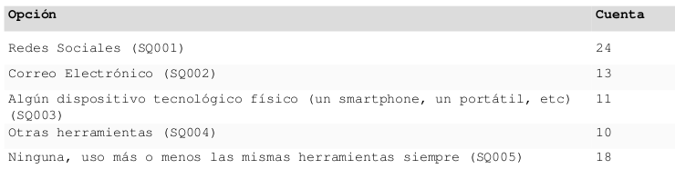
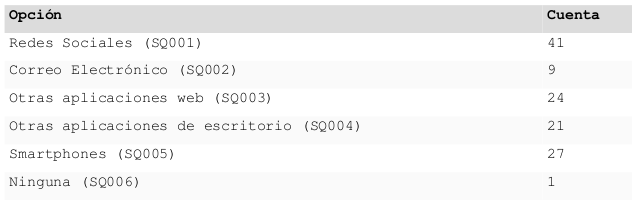
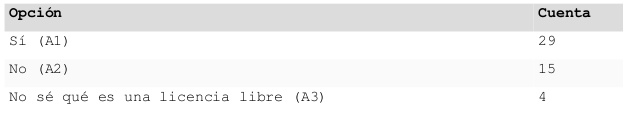
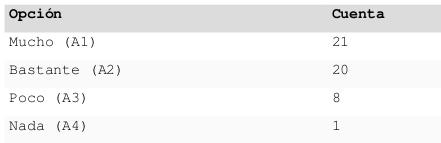

Trabajo de Fin de Máster. Usos, Actitudes y Necesidades Tecnológicas de los Movimientos Sociales de la ciudad de Madrid
Índice
- 1. Introducción y Justificación de la Relevancia del Tema
- 2. Objetivos del Estudio
- 3. Definición de Movimientos Sociales
- 4. Hipótesis
- 5. Diseño Metodológico
- 6. Investigación Documental
- 7. Análisis
- 8. Conclusiones
- 9. Bibliografía
- 10. Licencia de este Trabajo
Máster en Metodología de la Investigación en Ciencias Sociales, Innovaciones y Aplicaciones Facultad Ciencias Políticas y Sociología, UCM.
Autor: David Arroyo Menéndez.
Fecha: Presentado en Octubre de 2012.
1 Introducción y Justificación de la Relevancia del Tema
En un contexto de crisis económica internacional, revueltas en el mundo árabe, … España se convierte según Eurostat 1 en el país de la Unión Europea con la mayor cifra de desempleo (24.8%), dónde además el desempleo crece más rápido (entre Abril de 2011 y Abril de 2012 se pasó de un 21.2% a un 24.8%) y solo a una décima de ser el país con mayor desempleo entre menores de 25 (España tiene un 52.7%, mientras que Grecia un 52.8%).
Mientras, suceden cuestiones como que “El número de desahucios bate todos los récords: 46.559 en tres meses de 2012” 2 , o “Los ricos logran ganar un 6% más en el peor año de la crisis” 3, o “Amancio Ortega ya es el tercer hombre más rico del mundo” 4 (habiendo incrementado su fortuna en un 32% en un año), o que mientras la matriculación de coches cae un 18% (siendo la peor cifra desde 1993) los coches de lujo se vendieron un 83% más en 2011 5 … Estos datos pueden hacer pensar que la crisis no golpea con la misma intensidad a pobres y ricos.
Así, según el CIS 6, en Julio de 2012 los españoles sitúan entre sus 3 problemas más importantes el paro (78.6%), los problemas de índole económica (46.5%) y la clase política, los partidos políticos (25.4%).
En Febrero de 2011, El Pais declaraba que “Las redes sociales han sido la base de las revueltas árabes” 7, el 15 de Mayo de 2011 surgiría un movimiento que inspirado en la ocupación de la plaza Tahrir, ocuparía muchas de las plazas de España en poco tiempo, teniendo la madrileña Plaza de Sol como referente, también los medios de comunicación dan a Internet y las redes sociales gran responsabilidad de lo ocurrido 8.
En este contexto, en el que los medios de comunicación ensalzan el poder de estas herramientas, como forma de articular la acción colectiva ante las injusticias globales, se decide presentar este Trabajo de Fin de Máster, que es un estudio cualitativo y documental acerca de cuáles pueden ser los usos, actitudes y necesidades tecnológicas de los Movimientos Sociales de Madrid. Así, este trabajo nos permitirá entender desde los propios discursos y contextos de los activistas las necesidades, ventajas e inconvenientes que ofrecen las nuevas tecnologías en el día a día de los grupos en los que participan: en la toma de decisiones, la difusión de ideas y eventos, la planificación, etc.
Este trabajo surge así, como una ampliación lógica de las prácicas realizadas en la Asociación Comunes 9. Esta asociación se dedica a proporcionar herramientas libres a colectivos y activistas para mejorar el bien común. Sus tres proyectos principales son: Ourproject, Kune y Move Commons.
Ourproject.org es una web basada en repositorios de contenido colaborativo y libre. Actúa como una ubicación central para ofrecer espacio y herramientas web para proyectos de diversos temas, focalizado en el conocimiento libre. Su objetivo es extender las ideas y las metodologías del software libre hacia otras áreas sociales, promocionando la cultura libre en general. Se entiende cultura libre, como aquellos bienes culturales (imágenes, audio, vídeo, obras impresas, etc) que se pueden copiar, modificar y redistribuir libremente, tal como se explica en (Lessig, 2004). Así, se proveen múltiples servicios web (hosting, listas de correos, wiki, ftp, foros, etc.) para proyectos sociales/culturales/artísticos siempre y cuando compartan sus contenidos bajo licencias Creative Commons (u otras licencias libres). Activa desde 2002, actualmente hospeda a 1.000 proyectos cuyos servicios reciben más de 1.300.000 visitas mensuales. Kune es una plataforma para la promoción de los métodos colaborativos, los contenidos compartidos y el conocimiento libre. Su objetivo es mejorar/modernizar/replicar la labor que hace ourproject.org, pero de un modo más sencillo, expandiendo sus capacidades para la construcción de comunidades. Permite la creación de espacios online para el desarrollo de trabajo colaborativo, donde organizaciones e individuos puedan construir sus proyectos online, coordinar una agenda común, desarrollar reuniones virtuales y conocer personas y organizaciones con intereses similares. Une las características de las redes sociales con las capacidades del software colaborativo, con el fin de que diversos grupos puedan desarrollar sus actividades y promocionar los contenidos compartidos. Move Commons (MC) es una sencilla herramienta web para que iniciativas, colectivos y organizaciones no gubernamentales, puedan formular y visibilizar los principios básicos con los que se han comprometido. La idea detrás de MC sigue la misma mecánica del etiquetado de obras culturales bajo Creative Commons, proveyendo un sistema de etiquetado fácil (de abajo hacia arriba) para cada iniciativa, con 4 iconos principales, y algunas palabras clave. Su objetivo es aumentar la visibilidad y difusión de este tipo de iniciativas y la construcción de una red entre las iniciativas/colectivos al rededor del mundo, propiciando el descubrimiento mutuo. De este modo se podría facilitar lograr una masa crítica. Además, los nuevos visitantes de la página web del colectivo o grupo podrán entender su enfoque colectivo y/o descubrir colectivos afines en su campo/lugar/interés con una simple búsqueda. Aunque ya existen algunas iniciativas que cuentan con su MC, sigue siendo una versión beta desarrollada, también, con el apoyo del Commons Lab del Medialab-Prado.
2 Objetivos del Estudio
El objetivo general de este estudio es deteminar las necesidades comunicativas, así como el uso que hacen de Internet los movimientos sociales y las luchas populares que ocurren en Madrid desde un punto de vista principalmente cualitativo y como objetivo secundario determinar los factores de cambio de unas herramientas a otras. Un desglose de objetivos sería el siguiente:
- Conocer usos tecnológicos de los colectivos y activistas. Cómo usan internet y otras nuevas tecnologías
- Conocer la forma en que los colectivos se organizan internamente, para construir nuevas herramientas que ellos no imaginan pero que podrían facilitar su trabajo diario
2.1 Cuál es el flujo de comunicación 2.2 Cómo se organizan para redactar documentos en común 2.3 Cómo funciona la toma de decisiones 2.4 Cómo movilizan, cómo dan difusión a sus actividades, convocatorias 2.5 Como contactan a otros grupos y forman alianzas, coaliciones, movimientos.
- Determinar los factores de cambio de unas herramientas a otras
- Marco Teórico y Conceptual
3 Definición de Movimientos Sociales
Para definir Movimientos Sociales desde el punto de vista de las ciencias sociales he escogido a tres autores principales Charles Tilly, Sidney G. Tarrow y Mario Diani. Tilly define movimientos sociales como una serie actos polémicos, manifestaciones y campañas por las que la gente normal crea reclamos colectivos a otros (Tilly, 2008). Para Tilly, los movimientos sociales son el principal vehículo para que la gente ordinaria participe en políticas públicas (Tilly, 2008:22). Él argumenta que hay tres principales elementos para un movimiento social:
Campañas: un esfuerzo público sostenido y organizado de acción colectiva para reclamar a alguna autoridad.
Repertorio (repertorio de contención): empleo de combinaciones de entre otras las siguientes formas de acción política: creación de asociaciones de propósito especial y coaliciones, encuentros públicos, procesiones, vigilias, manifestaciones, recogidas de firmas, panfletos WUNC (worthiness, unity, numbers, and commitments) displays: esto puede traducirse como muestras de dignidad, unidad, número y compromiso.
Por otro lado, Sidney G. Tarrow define un movimiento social como desafíos colectivos [a élites, autoridades, otros grupos ó códigos culturales] por personas con propósitos comunes y solidaridad en interacciones sostenidas con estas élites, oponentes y autoridades. Él distingue específicamente movimientos sociales de partidos políticos y grupos de presión (lobbies), (Tarrow, 1994).
En (Diani, 2011:43), se define movimientos sociales como procesos sociales sociales diferenciados consistentes en mecanismos a través de los cuales actores comprometidos en la acción colectiva: se involucran en relaciones conflictivas con oponentes claramente identificados; se vinculan en densas redes informales; y comparten una identidad colectiva diferenciada.
Como se puede apreciar el desafío a algún tipo de autoridad está presente en las tres definiciones, así como el vínculo o sentimiento de grupo que une a quienes se oponen. Las diferencias no son muy grandes y seguramente se deben más a expresar los conceptos con diferentes palabras, pero las dudas que podríamos tener es, por ejemplo, si el compromiso es o no un atributo de los movimientos sociales, o si un partido político podría llegar a ser parte, … Para los propósitos del estudio cualquiera de las tres serán válidas, no obstante, también se ve necesario hacer una definición propia que establezca límites y responda a la realidad del concepto de movimiento social que usan los activistas en Madrid. Movimientos sociales son conjuntos de colectivos o agrupaciones de personas con estructuras formales o informales, pero generalmente con una alta democracia interna y que se asocian para defender ideas políticas de izquierdas ante gobiernos, corporaciones, empresas, o la sociedad en general. Dichos movimientos sociales, son indepedientes, no son parte del Estado, ni de empresas, aunque el recibir subvenciones o ayudas estatales no les excluye para ser considerado movimiento social, aunque es un tema que muchos de estos colectivos también pueden rechazar abiertamente, en pos de su independencia.
La necesidad de establecer esta definición surge desde dos puntos de vista (aclarar la ideología de dichos movimientos y la relación con el poder), si bien los autores citados se refieren en su bibliografía a movimientos sociales de izquierdas esto no se aclara de una forma explícita en la definición, supongo que por lo resbaladizo del término, pero en este trabajo fin de máster se ha considerado importante resaltarlo para evitar equívocos. También la relación con el poder establecido se ha visto importante en la definición, los autores citados coinciden en que los movimientos sociales desafían a la autoridad y en nuestra sociedad la principal autoridad son las grandes corporaciones y los estados, a veces unos estados o corporaciones se oponen a otros, o al menos partes de estos, incluso con formatos clásicos de movimientos sociales como manifestaciones públicas, por ejemplo, las manifestaciones que organizaba el gobierno de Franco para reclamar que el Peñón de Gibraltar fuera parte de España. Ese tipo de fenómenos son luchas de poder entre diferentes autoridades, a pesar de apoyarse en manifestaciones populares y no entrarían en la categoría de movimientos sociales que se maneja en este trabajo.
Ejemplos de Movimientos Sociales:
Con esta definición se ha delimitado el campo, pero una enumeración de ejemplos de movimientos podría aclararnos mejor de qué estamos hablando: obrero, del software libre, estudiantil, feminista, pacifista, antiglobalización, cooperativo, hippie, rastafari, okupa, de gays y lesbianas, de liberación animal, ecologista, 15M, etc. Estos son meros ejemplos para entender de qué se está hablando, pero se no trata de ser completo, ni excluyente. Muchos movimientos están mezclados unos con otros y muchas personas pueden sentirse identificadas con algunos aspectos de un movimiento, pero no con otros. Resaltar que, tratando de ser coherente con la definición Tarrow y la realizada en este trabajo, se excluye a los partidos políticos del llamado movimiento obrero, pero no así a sindicatos u otras uniones de trabajadores, debido a que si bien muchos reciben financiación del Estado y participan en la toma de decisiones de legislación laboral, no son parte estructural del mismo de una manera formal.
3.1 Posicionamientos hacia las Nuevas Tecnologías desde los Movimientos Sociales
En este apartado, trato de hacer una primera aproximación a cuáles son los debates y las posiciones que se ocupan en los movimientos sociales.
3.1.1 Anarquismo Primitivista
Tal vez, la postura más tecnófoba que podemos encontrar dentro de los movimientos sociales está la del anarquismo primitivista, cuyo máximo exponente hoy en día está encarnado por el filósofo anarquista John Zerzan, quien es también un ecologista radical. Para Zerzan hay indicios de que la actual sociedad basada en el progreso tecnológico no hace a las personas felices: enfermedades mentales, extinción de especies, calentamiento global, etc. Por otro lado, para él las sociedades de los tiempos paleolíticos y sociedades similares de hoy viven en formas no alienadas y no opresivas basadas en una abundancia primitiva cercanas y respetuosas con la naturaleza.
3.1.2 Movimiento del Software Libre
Más influyente en los movimientos sociales es la postura del movimiento del software libre que nace de la cultura hacker de los primeros usuarios de computadoras de centros de investigación de universidades norteamericanas, quienes en resumen pensaban que la información debía fluir libremente y que los ordenadores podían crear un mundo mejor. (Levy, 2010:27-39)
Esta cultura se institucionalizó en el movimiento del software libre, como oposición a la invención de utilizar fórmulas restrictivas de copyright en paquetes de software, impidiendo así, la copia y modificación de este software. El movimiento del software libre fué iniciado a principios de los 80 por Richard Stallman quien definió software libre como aquel software que tiene 4 libertades básicas: de uso, de copia, de modificación y de redistribuir copias modificadas 10.
Desde este movimiento, usar y desarrollar software ayuda a mejorar la vida de las personas siempre y cuando se respeten esas cuatro libertades. Ese movimiento se mezcló con otros movimientos sociales como el movimiento okupa, antiglobalización, etc. en la primera década de este siglo a raíz de proyectos como indymedia, nodo50, sindominio, los hackmeetings y los hacklabs. Hoy, propuestas de redes sociales como n-1.cc o tomalaplaza son propuestas de esa fusión entre el movimiento del software libre y el movimiento 15M.
Sin embargo, son movimientos diferenciados en el momento que también grandes corporaciones como Google, u Oracle, entre otras, con motivaciones totalmente diferentes a las de los movimientos sociales pueden apoyar el movimiento del software libre liberando código fuente o pagando a programadores/as que contribuyen a proyectos de software libre. De hecho, este tipo de corporaciones suelen denominar a su software “Open Source”11, y quienes se adhieren a ese movimiento, en general, aunque dan recomendaciones prácticas muy similares, no lo hacen por motivaciones éticas o de libertad, sino cuestiones más pragmáticas como crear software de calidad, o similares12.
3.1.3 Hacktivismo
Si bien en España hay personas como (Barandian, Roig y otros 2006:175-176) donde se asocia hacktivismo al activismo tecnológico que se hace desde los centros sociales okupados, el término aparece 13 por primera vez en 1996 por miembros del Cult Dead of Cow14 y se asocia a cualquier forma de acción mediada por la tecnología ya sea legal o ilegal que persiga fines éticos o políticos y muchas personas gente usa ese significado y será el que se utilice en este trabajo. Así, a modo ilustrativo, grupos como Anonymous15 y Wikileaks16, entrarían en esta categoría, aunque hay muchos otros. Anonymous centra su actividad en la realización de ciberataques por motivaciones políticas como tumbar páginas web de organizaciones que consideran sus enemigos políticos. Mientras que Wikileaks se dedica a publicar documentos secretos de gobiernos u organizaciones.
3.1.4 Posiciones acríticas
No obstante, es muy frecuente dentro de los movimientos sociales posturas llamémosles más acríticas o convencionales. Donde se usa el software o las nuevas tecnologías simplemente como una herramienta, sin importar si es o no software libre, o qué ocurre con su privacidad. Todo el uso de Twitter y Facebook en las revueltas árabes, o de indignados en países occidentales entraría dentro de esta categoría. Lo importante aquí es comunicar para difundir la idea y no importa demasiado el medio para ello.
3.2 Sobre el factor de cambio tecnológico
(C. Shapiro y H. R. Varian, 1999) explican que "[y]ou just cannot compete effectively in the information economy unless you know how to identify, measure, and understand switching costs and map strategy accordingly." Desde luego, cambiar de una tecnología a otra tiene unos costes que es importante medir, así ante dos tecnologías similares, si una ha sido ya adoptada y la otra pretende ser adoptada es probable que esta última nunca llegue a adoptarse, debido al coste del cambio tecnológico. De hecho, Richard Stallman, argumenta que “El principal obstáculo para el triunfo del software libre es la inercia social”17, refiriéndose a que software privativo como Microsoft Windows, se adopta en empresas y organizaciones, no porque sea mejor técnicamente, sino porque es lo que todo el mundo usa y así, hay más informáticos y trabajadores que lo conocen y lo adoptan sin problemas. Y propone como solución “hablar sobre el software libre y la libertad, no meramente de beneficios prácticos”. Obviamente, las personas que participan en movimientos sociales pueden sentirse influidos por las posturas éticas y de libertad, pero ¿más que cualquier otro grupo social?. Para contestar a esta pregunta deberemos adentrarnos en la raíz antropológica que promueve la cultura de compartir el software, que es básicamente la cultura del regalo, en (Mauss 2009: 70) se dice: “En la civilización escandinava y en muchas otras, los intercambios y los contratos siempre se realizan en forma de regalos, teóricamente voluntarios, pero, en realidad, entregados y devueltos por obligación." Esta obligación viene de la fuerza de la norma social y esa norma social, será más o menos fuerte, en función de los valores de la cultura a la que se pertenece. Así pues, podemos pensar que los valores del movimiento obrero de abolición de la propiedad privada, o cuanto menos de apoyo mutuo y solidaridad pueden estar bastante presentes en los movimientos sociales actuales y, que la cultura del regalo se impregne de manera lógica también en la cultura tecnológica. Sin embargo, también tiene valor explicativo que ante una falta de cultura tecnológica propia y el desconocimiento, se adopte la cultura tecnológica dominante y, que grupos menos ideologizados, pero más tecnológicos sean más proclives a usar y desarrollar software libre, simplemente por el hecho de que “los regalos” tienen más valor para ellos. Ante la cuestión de adopción de tecnología para la difusión de ideas políticas (redes sociales, blogs, páginas web, etc.) desde un punto de vista teórico, parece más difícil la resistencia al cambio, ya que Internet amplifica el número de oyentes de un discurso sin apenas coste para el emisor, más que el conocimiento de usar la tecnología que pueden haberlo adquirido por otras razones, por ejemplo, de tipo laboral.
4 Hipótesis
- El factor más importante que determina la tecnología a utilizar es la inercia social. Me refiero con esto que cuando alguien decide usar tecnología pesa más saber qué es lo que están haciendo las personas de su entorno que cualquier tipo de estudio comparativo o teoría filosófica. Hay personas que influyen más en las elecciones tecnológica que tienen sus contactos, incluso hay a quien podríamos llamar trend setter cuyas opiniones pesan más debido a un prestigio moral, profesional o de simple popularidad. La cuestión de la inercia social puede explicar el porqué los movimientos sociales fueron paulatinamente cambiando las posturas tecnofóbicas por otras más tecnofílicas, tal y como se ve en (Sábada, 2010). Así, problemas como la privacidad, el coste añadido, o la necesidad de aprendizaje de las mismas no han desaparecido ni mucho menos, pero como ya todo el mundo las usa se ven más las ventajas que los inconvenientes.
- Seguramente lo que diferencia a los movimientos sociales con respecto a la media de internautas es que se usa más la tecnología y se usa con discursos más críticos, ya que se ve como una herramienta para la difusión de ideas políticas y, los medios de difusión deben tener algún grado de coherencia con las ideas que se defienden.
- El movimiento al que una persona se adhiere no determina necesariamente las tecnologías que va a usar, aunque sí lo condiciona. Seguramente cuestiones como la profesión, sean más determinantes, pero obviamente, como espacio de socialización también telemático, recibe influencias de los discursos y actitudes de sus iguales.
5 Diseño Metodológico
5.1 Fases del Estudio
Establecer unas fases permitió estructurar el trabajo y entender los avances que se iban haciendo en la investigación, estas fases no fueron rígidas en cuanto a que a veces hubo que volver atrás a revisar teoría para analizar entrevistas, o clarificar términos, pero sí permitieron establecer dónde se estaba haciendo el énfasis en cada momento.
Las fases que se establecieron fueron las siguientes:
- En primer lugar, ha habido un planteamiento de cuáles serían los objetivos del estudio.
- Después se elaboró un marco teórico y un trabajo de conceptualización dónde se busca una definición de Movimientos Sociales que será la que se use en el estudio, seguidamente se reflexiona acerca de algunas posturas relevantes en las que se aborda el tema de la tecnología en los movimientos sociales y se reflexionó acerca de factores de cambio tecnológico.
- Seguidamente se hizo una recopilación y análisis documental acerca de cómo se usa la tecnología en general y cómo se usa la tecnología con fines políticos, viendo similitudes y divergencias.
- Después de haber visto teoría y estudios previos se estuvo en condiciones de establecer las hipótesis del estudio.
- Seguidamente se definió y justificó el diseño del campo cualitativo: metodología escogida, diseño muestral, guión de entrevista, etc.
- La realización del campo y la transcripción de entrevistas ocupó gran parte del trabajo de la investigación.
- Ante el primer resumen de entrevistas se estableció una encuesta on-line de carácter exploratorio. Si bien la idea era dotar de capacidad de generalización al estudio por problemas técnicos y de tiempo no se pudo llegar a realizar dicha encuesta mediante muestreo aleatorio y quedó con un muestreo azaroso o de bola de nieve, sin capacidad de generalización.
- Una vez realizadas las entrevistas se pasó al análisis. Se realizó un resumen con los principales y resultados y se enfocó la metodología de análisis sociológico del sistema de discursos para entender los contextos en los que se producen estos resultados.
- Finalmente, se establecieron las principales conclusiones del estudio revisando objetivos e hipótesis.
5.2 La Metodología Cualitativa
Las principales técnicas cualitativas escogidas fueron:
- Investigación Documental y de Datos Secundarios
- Entrevistas en Profundidad.
5.2.1 Investigación Documental
Siguiendo a (Hochman y Montero: 1978:13) se han consultado libros, pero también estudios publicados en Internet acerca del tema de estudio, debido a que estos se actualizan con frecuencia y periodicidad. Así, el objetivo de esta fase es tener una visión generalista de cómo se usa Internet de manera general, de cómo se usa con fines políticos y tener una perspectiva histórica de las actitudes de los movimientos sociales repecto a Internet. Esto posibilitará tener información de contexto que permita hacer comparaciones de las personas activistas con respecto a la población en general.
5.2.2 Entrevistas en Profundidad
Esta fase es la metodología primaria del proyecto; es cualitativa porque no hay muchos estudios de cómo los activistas usan las nuevas tecnologías; y está basada en entrevistas y no en grupos de discusión porque siendo activistas de una misma ciudad puede ocurrir que en muchas ocasiones se conozcan entre ellos y eso influya en los discursos. Se recuerda la definición que hace Luis Enrique Alonso (1994: 229-230) acerca de las entrevistas en profundidad. “La entrevista en profundidad es … un constructo comunicativo y no un simple registro de discursos que 'hablan al sujeto'. Los dicursos no son así preexistentes de una manera absoluta a la operación de toma que sería la entrevista, sino que constituyen un marco social de la situación de la entrevista. El discurso aparece, pues, como respuesta a una interrogación difundida en una situación dual y conversacional, con su presencia y participación, cada uno de los interlocutores (entrevistador y entrevistado) co-construye en cada instante ese discurso (…) Cada investigador realiza una entrevista diferente según su cultura, sensibilidad, y conocimiento particular del tema y, lo que es importante, según sea el contexto espacial, temporal o social en el que se está llevando a cabo de una manera efectiva” (Alonso: 1994:229-230) En este sentido se ha evitado el sesgo que pudiera introducir diferentes sensibilidades reduciendo el estudio a un solo el entrevistador que es quien escribe. Así, los conocimientos del investigador acerca del campo de estudio, se resumen en 10 años trabajando como programador web y como otros 10 participando a veces más y a veces menos, en diferentes movimientos sociales entre los que se incluirían: vecinal, hacktivista, estudiantil y sindical. Permitiendo tener una visión amplia del campo de estudio, facilitando la contactación y conociendo de manera directa a muchos de los entrevistados, lo que facilitaba la confianza al preguntar y la comprensión de los contextos en las respuestas. Así, refiriéndonos a los usos que se plantean en (Valles, 1999:190-191) el uso de la entrevista en este trabajo, no ha sido tanto exploratorio, pues ya había un conocimiento previo de cómo los movimientos sociales usan y necesitan la tecnología, sino más bien de profundización y análisis. Para analizar dichas entrevistas se ha hecho un primer resumen de resultados y después de manera mucho más minuciosa un análisis sociológico de discursos, con la idea de entender los contextos en los que se producen las respuestas de las entrevistas. Dicho análisis se realiza cómo forma de aproximarnos a cuestiones como ¿quién habla?, ¿de qué posición se habla, se produce el discurso? (posiciones discursivas), o ¿qué es lo que está en juego en lo que se habla?, ¿qué se quiere decir con lo que se dice? (configuraciones narrativas), o ¿de qué se habla?, ¿cómo se organiza el habla? (CONDE, F.; DEL ÁLAMO, G.; 2010:143) En mi experiencia de trabajo en la investigación social y de mercados existen tres procedimientos de análisis cuya utilización se ha expresado particularmente útil a la hora de abordar el “análisis sociológico del sistema de discursos” producidos en una investigación cualitativa. Son procedimientos que temporalmente se desarrollan de forma parcialmente simultánea, pero en los que tendencialmente se puede señalar una cierta lógica temporal en su utilización: Análisis de las “posiciones discursivas” básicas de los grupos. Intuición de las mismas e ida y vuelta a los textos para avalarlas o para transformarlas. Análisis de las posiciones discursivas que viene a ser el trabajo de responder a las preguntas: ¿quién habla?, ¿de qué posición se habla, se produce el discurso? Análisis de las configuraciones narrativas básicas que organizan los textos. Intuición de las mismas e ida y vuelta a los textos para avalarlas o para transformarlas. Análisis de las configuraciones que viene a ser equivalente a responder a las preguntas: ¿qué es lo que está en juego en lo que se habla?, ¿qué se quiere decir con lo que se dice? Análisis de los “espacios semánticos” de los discursos. Elaboración de los mismos y trabajo textual intenso para su estructuración sistemática. Análisis de los “espacios semánticos” que viene a ser equivalente a responder a las preguntas: ¿de qué se habla? ¿cómo se organiza el habla? Tras estos pasos del análisis se dejó hecha una mejor aproximación a la interpretación de los textos, en este caso, las entrevistas transcritas. Una vez concluida esta fase se lograron los principales objetivos de la investigación.
5.3 Diseño Muestral de Entrevistas
Las variables escogidas para determinar el diseño muestral son: Movimiento social al que pertenece la persona
- Sexo
- Edad
- Clase Social
- Movimiento Social
En realidad, la variable principal de nuestro diseño muestral es el movimiento social, recordemos que el título de este trabajo es “Usos y Necesidades Tecnológicas de los Movimientos Sociales de Madrid”. Sería probable que hubiera variación en función del movimiento al que pertenece, si éste está fuertemente estructurado, o con estructuras débiles o difusas, los objetivos que tiene el movimiento: ecología, derechos laborales, derechos de las mujeres, etc. A falta de una clasificación ampliamente consensuada de los movimientos sociales existentes en la ciudad de Madrid. He realizado mi propia clasificación y definición de los mismos:
5.3.1 Variable Movimiento Social
- Movimiento sindical
Me refiero al movimiento que defiende derechos laborales de los trabajadores/as, mediante estructuras identificadas como sindicatos. Si bien dentro de este movimiento hay diferentes vertientes: participación o no en comités de empresa, recibir o no subvenciones que determinan fuertemente la estructura y las prácticas de cada organización he decidido englobarlo todo en un mismo movimiento. Las entrevistas realizadas han sido a 2 personas de CCOO (mujer1 y mujer2)
- Movimiento anarcosindicalista
Me refiero al movimiento que defiende derechos laborales de trabajadores/as sin liberados, sin subvenciones y sin representantes sindicales en los puestos de trabajo y, por supuesto, sin políticos electos. Desde un punto de vista cualitativo solo hay dos formas de defender los derechos de trabajadores/as con y sin representantes, con y sin subvenciones y esto conlleva a prácticas, estrategias y tácticas realmente diferentes.
2 personas de CNT (hombre6 y hombre8).
- Movimiento 15M
El movimiento 15M surge como un movimiento popular y espontáneo a las consecuencias sociales de la llamada crisis económica: paro, desahucios, desmantelamiento del estado del bienestar, etc. es un movimiento que empezó con las acampadas de Sol y sus comisiones y que actualmente se estructura más en asambleas de barrio y realiza multitudinarias manifestaciones, para desahucios, etc. Hay 4 entrevistas realizadas a este movimiento.
- Movimiento Ecologista
El movimiento ecologista (en ocasiones llamado el movimiento verde o ambientalista) es un variado movimiento político, social y global, que defiende la protección del medio ambiente para satisfacer una necesidad humana, incluyendo necesidades de salud y sociales. En esos términos, los ecologistas hacen una crítica social más o menos implícita, proponiendo la necesidad de reformas legales y concienciación social tanto en gobiernos, como en empresas y colectivos sociales. Muy vinculado al movimiento ecologista, surge la necesidad de poner en contacto a productores y consumidores para evitar a los intermediarios, conocer de dónde viene lo que se come y garantizar unas condiciones dignas a los productores desde el asamblearismo y la autogestión. Para evitar críticas al llamar a los grupo de consumo, un movimiento debido a que le faltaría el número de personas que Tilly considera necesario para que sea un movimiento, he decidido agrupar ambas tendencias en movimiento ecologista. Hay 3 entrevistas que entrarían en esta categoría.
- Movimiento Feminista
Feminismo es un neologismo que identifica como movimiento social la lucha por la igualdad que se venía articulando desde antes de la creación, a finales del siglo XIX, del vocablo. El feminismo, en palabras de Mary Nash, aportó un término capaz de englobar, desde principios del siglo XX, distintas expresiones de resistencia y de lucha por los derechos de las mujeres. (Nash, 2004) Hay 2 entrevistas realizadas a mujeres vinculadas a este movimiento. Una de la cooperativa Pandora y otra de la Comisión de Feminismo del 15M.
- Movimiento de la No Violencia
La no violencia es una práctica o forma de actuación y una ideología política que consiste en no recurrir a la violencia, ya sea como método de protesta o como respuesta a la violencia. Si bien hay muchos colectivos de diferentes movimientos sociales en Madrid (ecologista, 15M, etc) que se sentirían identificados con este movimiento, se ha decidido recurrir a aquellos que se identifican de con éste de manera más clara. Hay 2 entrevistas realizada a este movimiento
- Movimiento Hacktivista
Este movimiento pretende llevar a cabo causas políticas de los movimientos sociales en general, o de la ética hacker (Levy, 2010:27-39) en particular, mediante la acción mediada por nuevas tecnologías. Dentro de este movimiento estaría tanto el desarrollo de software o hardware libre, como acciones más de boicot como las que puede realizar Anonymous 18 o de revelación de secretos de estado al estilo Wikileaks 19. Si bien en el contexto español está más asociado a hacklabs 20 y hackmeetings 21 (Barandian, 2003:13-24), que suelen ser personas vinculadas a movimientos sociales en general y al movimiento del software libre 22 en particular. Hay 2 personas entrevistadas de este movimiento.
- Movimiento Vecinal
Es el movimiento formado por las diferentes asociaciones de vecinos que pueblan los barrios y que en Madrid se federan en la FRAVM (Federación Regional de Asociaciones de Vecinos de Madrid). Al igual que el 15M es un movimiento de barrios, no obstante, si bien puede haber multimilitancia, hay muchas personas vinculadas al 15M que no se sienten parte del movimiento vecinal, por lo que he decidido separarlos. Hay 1 entrevista realizada a este movimiento, aunque hay otra persona que también pertenece, pero no se le entrevistó al respecto.
5.3.2 Variable Sexo
De la investigación documental podemos ver que hay más uso de nuevas tecnologías por hombres que por mujeres, si bien esa tendencia va disminuyendo con el tiempo (la EGM cifra que en 1997 había un 77% de mujeres y un 23% de hombres, mientras que en Abril/Mayo de 2011, había un 55,3% de hombres y 44,7% de mujeres entre quienes habían utilizado Internet el día anterior a la encuesta). Por lo que se ha decidido que el número de hombres y de mujeres esté nivelado. Hay 7 entrevistas realizadas a hombres y 8 entrevistas realizadas a mujeres.
5.3.3 Variable Edad
La siguiente tabla cruza datos del INE 23 y de la EGM 24 con respecto al porcentaje de los siguientes rangos de edad de la población española y de la población internauta en España.
| Rango de Edad | Porcentaje de Españoles | Porcentaje de Internautas |
| 14-19 | 5,67 | 10,8 |
| 20-24 | 5,20 | 10,4 |
| 25-34 | 13,92 | 26,7 |
| 35-44 | 16,17 | 23,7 |
| 45-54 | 14,72 | 14,9 |
| 55-64 | 11,57 | 8,1 |
| 65 y más | 18,74 | 5,4 |
Así, vemos que la población española más joven está mejor representada en la población internauta que la más envejecida.
La siguiente tabla (Anduiza, Cantijoch, Gallego y Salcedo, 2010: 42) hace pensar que no solo los jóvenes están más presentes en Internet, sino que además (a partir de 25 años) tienen más inquietudes políticas que otras edades más avanzadas (por ej. a partir de 55 años)
Distribución de la población, de los usuarios y de los participantes por edad (% por columnas).
| Rango de Edad | Muestra | Usuarios | Contacto | e-contacto | donacion | e-donacion | peticion | e-peticion |
| 18-24 | 11 | 18 | 7 | 13 | 9 | 13 | 12 | 15 |
| 25-34 | 21 | 31 | 18 | 29 | 21 | 28 | 25 | 30 |
| 35-44 | 20 | 25 | 23 | 27 | 22 | 19 | 26 | 25 |
| 45-54 | 16 | 16 | 31 | 21 | 19 | 26 | 20 | 17 |
| 55-64 | 13 | 7 | 14 | 9 | 15 | 9 | 10 | 9 |
| 65 y más | 20 | 2 | 7 | 2 | 15 | 5 | 6 | 4 |
| N | 3716 | 2169 | 254 | 346 | 922 | 147 | 899 | 280 |
Por ello se ha visto interesante que este grupo esté más fuertemente representado. Si bien sí se ha tratado que hubiera gente de diferentes grupos de edad.
5.3.4 Variable Clase Social
Las personas entrevistadas pertenecen a la clase media. La razón de esto es que las clases bajas usan demasiado poco Internet 25 y los movimientos sociales agrupan fundamentalmente a la clase trabajadora, por lo que se entiende que no tiene mucho sentido entrevistar a gente de clase alta.
5.4 Esquema de la Entrevista
5.4.1 Introducción
Se explica el contexto y partes de la entrevista. Se pregunta por los colectivos/grupos a los que pertenece la persona.
5.4.2 Flujos de información:
Esta parte es la coordinación interna y externa del grupo dividido en diferentes partes.
- Comunicación interna
Cómo se comunica el grupo con sus miembros
- Colaboración interna
- Búsqueda de consensos
Importancia de buscar consensos, acuerdos de mayorías, o si decide gente elegida para ello.
- Gestión de tareas
Cómo se gestiona una tarea de ejemplo, si se usa alguna herramienta telemática ó no, etc.
- Gestión de eventos
Desde simples reuniones, a preparación de jornadas, cómo se gestiona un evento. Ejemplos concretos.
- Comunicación con el exterior
- Captación de voluntarios/colaboradores
¿Hay alguna persona encargada? ¿Cómo llegan personas nuevas al grupo?
- Comunicación con otros colectivos
¿Con qué otras organizaciones se suele hablar? ¿Hay alguna persona encargada?
- Formar alianzas/coaliciones/movimientos/plataformas
¿Se participa o se ha participado en alguna plataforma? ¿Cómo se forman alianzas?
- Documentación interna
¿Existen documentos internos o todo es público? ¿Cómo se garantiza el uso autorizado a dichos documentos?
- Gestión económica
¿Se maneja dinero? ¿Hay donaciones? ¿Subvenciones? ¿Cómo se consigue el dinero? ¿Algún balance de gastos o ingresos?
- Toma de decisiones
Si no se ha dicho ya, preguntar cómo se toman las decisiones.
- Movilización
¿Se ha participado en alguna movilización como grupo? ¿En cuáles? ¿Cuál es el criterio para participar?
- Gestión de nuevos colaboradores
Cuándo llega un nuevo colaborador ¿alguien le explica cómo funciona el grupo? ¿quien?
- Reuniones/asambleas
¿Qué roles hay en las reuniones o asambleas? Ej: facilitadores/moderadores, anotadores, otros roles
- Visibilidad exterior
¿Cómo se da a conocer el colectivo al exterior?
- Participación en iniciativas de terceros
¿Habéis participado en alguna jornada o evento organizado por otro colectivo? ¿Puedes poner ejemplos?
- Compartición de recursos
- ¿Licencias libres?
En caso de que compartáis textos u otros materiales generados por el colectivo ¿utilizáis algún tipo de licencia libre como por ejemplo alguna licencia Creative Commons? ¿Sabes qué es una licencia libre?
- Transparencia de métodos, de acciones, de cuentas
¿Cuál es el grado en el que los miembros o personas afines conocen el funcionamiento interno de la organización? ¿Quién conoce las cuentas del grupo?
- Planificación
¿Se realiza algún tipo de planificación de acciones u objetivos políticos a corto, a medio, o a largo plazo …?
- ¿Licencias libres?
- Factores de Cambio Tecnológico
Esta fase de la entrevista ya no es sobre el colectivo, sino sobre la persona concreta que contesta a la entrevista.
- ¿Qué herramientas tecnológicas has usado en el último mes?
Solo las que vengan a la cabeza, todas las respuestas son válidas. No es un examen.
- ¿Cuáles son las herramientas tecnológicas que has dejado de usar si miras 5 años atrás?
Igualmente las que vengan a la cabeza.
- ¿Qué herramientas tecnológicas has incorporado si miras 5 años atrás?
En este caso también las que vengan a la cabeza. Opcionalmente y después de que haya dicho algunas se puede preguntar por redes sociales, u otras que puedan haber interés.
- ¿Qué herramientas tecnológicas has incorporado debido a tu activismo político?
Las que salgan. Se puede preguntar si usa las mismas o no.
- ¿Qué herramientas tecnológicas has usado en el último mes?
- Captación de voluntarios/colaboradores
5.5 Encuesta On-Line
Esta es una encuesta científica y los resultados se exponen de forma puramente orientativa, se realizó esta experiencia piloto para seguidamente realizar otra encuesta de muestreo aleatorio que finalmente se descartó debido a problemas de tiempo y recursos. Se ha considerado que el esfuerzo de redactar el diseño de preguntas y su implementación on-line tenía un valor considerable como para comentar esta fase. Ficha Técnica Ámbito: Nacional. Universo: Población española internauta, vinculada o afín a movimientos sociales Tipo de Encuesta: Encuesta on-line utilizando el software limesurvey. Muestreo: Encuesta no probabilística de bola de nieve Fecha de realización: 30 de Mayo al 5 de Junio de 2012. Cuestionario: Ver anexo.
6 Investigación Documental
6.1 Usos Actuales de Internet
6.1.1 Frecuencia de Acceso
Según la Encuesta General de Medios (EGM) de AIMC realizada entre Octubre de 2011 a Febrero/Marzo de 2012 la frecuencia de acceso ha ido incrementándose en España de manera más o menos lineal desde un 1% en 1996 a un 59,5% en 2012 contando el número de usuarios que se han conectado en el último mes. Aunque contando quienes se conectaron hace un día diremos que se pasa de un 0,9% en 1996 a un 45,4% en 2012, por lo que se puede concluir que quienes se conectan lo hacen con bastante frecuencia seguramente porque es una herramienta de trabajo, estudio, o comunicación. Así mismo, en cuanto a cuál es el género de aquellos que se conectan se ha pasado de 77% de hombres y un 23% de mujeres en 1997 a un 54,3% de hombres y un 45,7% en 2012. Esto es, ha pasado de ser una actividad predominantemente de hombres a una actividad en la que hay un número similar de hombres y de mujeres. Con respecto a la clase social de quienes se conectan a Internet en España según la EGM se ha pasado de unos porcentajes de (29,2% de clase alta, 34,9% de clase media-alta, 29,7% de clase media-media, 5,8% de clase media-baja y un 0,4% de clase baja) en 1997 a unos porcentajes de (14,2% de clase alta, 20,1% de clase media-alta, 46,9% de clase media-media, 16,9% de clase media-baja y un 1,9% de clase baja) en 2012. Con lo cual con el aumento de las personas que pueblan Internet en España, se pasa de un perfil de gente acomodada a un perfil de trabajadores/as de oficina en general.
6.1.2 Tecnologías Usadas al Conectarse
| Sistema Operativo | % en Abril de 2009 | % en Marzo de 2012 |
| Windows | 89.5 | 75.79 |
| Mac | 6.05 | 8.69 |
| Linux | 1.49 | 5.31 |
| iPhone | 0.93 | 5.22 |
| iPad | 0 | 2.39 |
| Blackberry | 0.15 | 0.83 |
| SymbianOS | 0.09 | 0.17 |
| DoCoMo | 0.02 | 0.01 |
| SunOS | 0.01 | 0.01 |
| FreeBSD | 0.01 | 0.01 |
| OpenBSD | 0 | 0 |
| Total | 98.25 | 98.43 |
Es posible hacer una comparativa de las tendencias en tecnologías usadas al conectarse a Internet a partir de los logs de los proyectos wikimedia 26 (por ej: wikipedia) de los tres últimos años, decir que puesto que wikipedia.org es el sexto lugar más visitado de Internet esta muestra es bastante fiable y representativa de la población actual de Internet. Analicemos los sistemas operativos y navegadores desde los que se conecta la población: En Sistemas Operativos vemos que en tres años el sistema operativo hegemónico Windows ha caido más de un 10% como lugar desde el que conectarse a Internet debido fundamentalmente a dos factores: la aparición de nuevos dispositivos desde los que conectarse (smartphones y tablets) donde Windows no predomina y en menor medida una cierta consolidación de otros sistemas operativos emergentes como MacOS y GNU/Linux. Aclarar que el 5,31% de Linux en Marzo de 2012, se reparte con el 3,57% para Android y el resto 1,73% corresponde a sistemas GNU/Linux. En Abril de 2009 Android solo ocupaba un 0,03% del total de visitas a proyectos wikimedia.
Fijémonos ahora en la distribución de porcentajes de navegadores:
| Navegador | % en Abril de 2009 | % en Marzo de 2012 |
| I. Explorer | 57.37 | 27.31 |
| Chrome | 1.93 | 23.96 |
| Firefox | 30.71 | 21.8 |
| Safari | 3.86 | 4.67 |
| Opera | 2.57 | 2.35 |
| Móviles | 1.9 | 9.9 |
| Tablets | 0 | 2.97 |
| Total | 96.44 | 80.09 |
De este modo, aunque Internet Explorer sigue siendo el navegador más utilizado ha caido su popularidad un 50% en los últimos 3 años. En este caso la principal razón es la fuerza con la que ha irrumpido el navegador Chrome y en menor medida la llegada de nuevos dispositivos. Parece que a Firefox le ha afectado menos (ha caido un tercio su popularidad). Por lo que de confirmarse esta tendencia es posible preveer que los navegadores libres (Firefox y Chrome) acabaran siendo tendencia en los próximos años. Por reflexionar un poco más sobre si las ventajas éticas del software libre calan en los usuarios finales, mi reflexión a la vista de estos datos es que calan en la medida en que puedan ofrecer novedades tecnológicas y el hecho de tener apadrinamiento de grandes empresas como Google facilita las inversiones en márketing y tecnología.
6.1.3 Qué se hace una vez conectado
Según la EGM el 88,2% de las personas que utilizaron Internet en el último mes utilizaron también el correo electrónico.
Según la EGM el 50,4% de las personas que utilizaron Internet en el último mes utilizaron también redes sociales. De hecho según Alexa 27 (30/04/2012) las redes sociales Twitter y Facebook están entre los 10 sitios más visitados de Internet. Siendo la red social Facebook el segundo sitio más visitado y Twitter el octavo.
Según la EGM el uso de mensajería instantánea es del 48,4% de la población, habiendo bajado su uso durante el último año.
Según la EGM el 37,5% visionó vídeos y el 36% escuchó música durante el último mes medido en Abril/Mayo de 2011. Siendo y outube.com el tercer sitio más visitado de Internet según Alexa (30/04/2012).
Los wikis son otra herramienta de amplio uso en Internet, siendo según Alexa (30/04/2012) la wikipedia el sexto sitio más visitado.
Otra herramienta de amplio uso son los blogs. Siendo blogger.com el 11 sitio más usado en Internet y wordpress.com el número 18, también según Alexa (30/04/2012). En la EGM no sale excesivamente bien parado siendo tan solo el 6,8% quienes participan en blogs, sin embargo, el 56% dice leer noticias de actualidad. Destacar que sitios de blogs como Indymedia (a nivel internacional) ó tomalaplaza.net durante el 15m son herramientas que han tenido un papel relevante en el ámbito de la contrainformación.
Hay otros usos que también tienen una importancia según la EGM. Estos son:
- Jugar en Red (11,1%)
- Compartir Archivos (21,4%)
- Operadores de Banco (20,7%)
- Llamar por teléfono (11,1%)
En resumen, Internet tiene un papel relevante en todo lo que es el acceso a la información en sus múltiples formas: comunicar, actualidad, amistad, investigación, música, vídeos, etc.
6.2 Usos Políticos de Internet
Frecuencia de Uso: Según (Anduiza, Cantijoch, Gallego y Salcedo, 2010: 35) "el 45% de los internautas se informa sobre política a través de internet. Además, la mayoría de estos lo suele hacer con una frecuencia relativamente alta. El 19% ha visitado la web de algún partido político. Tan sólo el 3% está suscrito a algún boletín electrónico sobre actualidad política". Estos datos son bastante altos se recuerda que quienes usan redes sociales son un 50,4% y quienes se informan vía Internet acerca de actualidad en general son un 56%. Otro dato interesante es que quienes siguen la información política en Internet lo hacen mayoritariamente usando medios tradicionales "durante la campaña de las elecciones generales de 2008, más del 80% de los (escasos) electores que la siguieron a través de internet lo hicieron en webs de medios tradicionales, mientras que sólo el 23% lo hizo en webs de partidos y candidatos, y el 22% en blogs" (Anduiza et al., 2009).
Según el mismo estudio, "Un 22% de los internautas ha recibido algún email convocándoles a una manifestación y prácticamente el mismo porcentaje ha recibido a través de internet un manifiesto o petición. Los estímulos movilizadores online para acudir a una manifestación son menos frecuentes que los que se producen cara a cara (44% de la muestra), pero más frecuentes que los que se dan a través de sms (14%)". (Anduiza, Cantijoch, Gallego y Salcedo, 2010: 46). Es probable que esto sea debido a que el contacto cara a cara da más pié a conversaciones informales, mientras que cuando uno escribe un email se intenta que el receptor tenga interés en lo que recibe, es probable que con otras tecnologías como las redes sociales, la gente reciba más llamadas a convocatorias que por email.
Otro dato relevante del estudio es el 29% de los internautas afirma haber utilizado internet para comunicarse con una asociación u organización, el 16% lo ha utilizado para plantear alguna queja ante la administración mientras que tan sólo el 5% lo ha empleado para entrar en contacto con algún partido o político. El 20% asegura que ha participado en algún foro, web o blog con contenidos sociales o políticos, lo que confirma la importancia de la dimensión comunicativa en los usos políticos de internet y el surgimiento de nuevos espacios públicos en el mundo virtual. El 14% ha firmado alguna petición o manifiesto a través de este medio y sólo el 8% ha realizado alguna donación. (Anduiza, Cantijoch, Gallego y Salcedo, 2010: 44-45). El 20% que asegura haber participado en foros con contenidos sociales o políticos resulta algo contradictorio con los resultados de la EGM que daban solo 6,8% a la población internauta que participaba en foros o blogs, en cualquier caso releva que el interés por la política cuando se trata de participar en Internet es bastante alto.
Si bien el estudio focaliza la participación política tradicional y no la de los movimientos sociales sí se llega a resultados reveladores. Internet se usa fuértemente para informarse y opinar acerca de política si lo comparamos con otros usos de Internet y, en menor medida que en el cara a cara para convocar movilizaciones.
Evolución de Actitudes de los Movimientos Sociales respecto a Internet en España
En (Sábada, 2010) se da una tabla cronológica de cómo ha evolucionado la actitud de los movimientos sociales en España desde el desconocimiento, la tecnofobia, telemática antagonista hasta el software libre y la tecnofilia. Se reproducirá la tabla a modo ilustrativo:
| Años | Fase de Internet | Ejemplo de Movimientos Sociales | Postura de Movimientos Sociales |
| 1969-1992/3 | Comienzos incipientes, Hackers, redes académicas, tecnología "elitista", desarrollo inicial, ámbitos restringidos, investigación, Internet como "ciencia ficción", etc. | Free, APC, ONGs, etc | Postura más bien tecnofóbica, recelo y prejuicios salvo escasos visionarios aislados. Distanciamiento y escepticismo. |
| 1992/3-1999 | Boom, mitología cibernética, era de las punto.com, expectativas sobredimensionadas, auge de todo lo ciber, esperanzas. | Movimiento feminista o movimiento de okupacion. | Punto de inflexión, cambios de actitud, primeros proyectos, la telemática como una herramienta más, etc. División de posturas y pareceres. |
| 1999-2004 | Acceso masivo, cibermasas, desmitificación, socialización, descreimiento, pragmatismo, intentos de regulación, etc. | Oposición a la guerra de Irak, | Mediactivismo, ofensiva hacia los medios, reapropiación, estrategias comunicativas, acción comunicativa como acción política, etc. Consenso más o menos global, la tecnofobia queda arrinconada o casi extinguida. Auge de la antiglobalización y el software libre. |
| 2005-actualidad | Movimientos P2P, usos de Facebook, flash MOBS y móviles, etc. | Web 2.0, comunidades virtuales, redes sociales, etc. ¿Excesiva tecnofilia? |
Como se puede observar se parte de un desconocimiento y recelo, donde la cultura de Internet y la de los movimientos sociales parecen muy alejadas (Internet nace en centros de investigación, muchas veces ligados al ejército estadounidense). Poco a poco van surgiendo los primeros proyectos lo cual genera muchos debates y controntación. Con la popularización del software libre y los proyectos de contrainformación on-line al estilo indymedia surge una visión de que Internet puede tener usos válidos para los movimientos sociales. Y en la actualidad con el advenimiento de las redes sociales, tal vez hay una falta de discurso más crítico.
7 Análisis
7.1 Resumen de resultados
7.1.1 Flujos de Información
- Comunicación Interna
Estos flujos están fuertemente relacionados con la estructura de la organización. Si la organización es pequeña suele bastar con asambleas o reuniones periódicas, si es grande puede tener estructuras complejas y diferenciadas como comisiones, secciones, federaciones, etc.
- Redacción en Común
Si bien casi todo el mundo sabe qué es un wiki, prácticamente muy pocos lo usan. Se prefiere google docs, o soluciones tipo etherpad, o de otro tipo.
Aunque lo más frecuente para redactar en común es usar un procesador de texto e intercambiar los ficheros con adjuntos.
- Búsqueda de Consensos
Los consensos son deseables pero no siempre imprescindibles, aquí los factores importantes son tres: 1) el tamaño del grupo, 2) si la organización/colectivo está "legalizada" o no y 3) la ideología del propio grupo a este respecto. En colectivos pequeños es más sencillo llegar a consensos que en grupos grandes. En el caso que esté “legalizada” debe asumir al menos la estructura que le impone que el Estado (ej: en el caso de ser asociación debe tener un presidente, una asamblea anual, etc.). La ideología muchas veces matiza esa estructura más legalista.
- Gestión de Tareas
Prácticamente ningún grupo gestiona sus tareas utilizando una herramienta telemática. Lo más frecuente es que emanen de las propias reuniones o asambleas, si los tienen de grupos de trabajo y en otras ocasiones solicitando ayuda a conocidos/colaboradores directos.
- Gestión de Eventos
En esta pregunta lo más usual es que expliquen como organizan una charla o jornada. Lo cual suele emanar de una asamblea y se tira de contactos. La relación con la telemática suele venir en la difusión donde sí se usa la web del grupo y las redes sociales.
- Comunicación con el exterior
Todos los grupos tienen maneras de comunicarse con colectivos/organizaciones afines, es normal que haya gente con ese rol, pero no siempre.
- Documentación Interna
Es muy normal manejar documentación interna y se comparte principalmente usando correo electrónico.
- Gestión Económica
También es muy normal incluso en colectivos pequeños y sin estructuras formales el manejar dinero. Este puede conseguirse a través de aportaciones voluntarias, fiestas, etc. Esta pregunta rara vez la relacionan con tecnología y suele haber desconocimiento de las tecnologías utilizadas al respecto por parte de la militancia entrevistada.
- Toma de decisiones
Esta pregunta suele ser explicada en la de comunicación interna, o búsqueda de consenso. Pero a veces dan otro tipo de detalles especialmente si la organización es grande/compleja.
- Movilización
Obviamente las personas entrevistadas suelen participar en movilizaciones, sin embargo, no siempre lo hacen desde la organización en la que participan más, aunque sí es frecuente ir con las personas de esa organización. Las organizaciones más orientadas a la movilización de las entrevistadas son los sindicatos y el movimiento 15M.
- Gestión de nuevos colaboradores
En este punto no hay uniformidad, hay grupos donde sí tienen un protocolo establecido para atraer o integrar a nuevos miembros y en otros no. Tampoco diría que depende de si el colectivo es grande o pequeño, sino más bien de la voluntad al respecto, diría que es un aspecto cultural de cada grupo.
En el tema monetario, en Pandora (organización feminista orientada a lo laboral) se rechazaba el que más personas colaborarán si no se les podía incorporar (pagando) en la cooperativa. Sin embargo, en otras organizaciones (por ej. CNT) se rechaza explícitamente el pago. Las posturas más laxas suelen ser las más frecuentes por ej. en el 15M nadie cobra pero no se hace tanto énfasis en su rechazo o en Ecologistas o Traficantes de Sueños hay quien cobra y quien no y se convive de esa manera.
- Roles en Asambleas
Lo más normal es 2 roles: alguien que toma actas y alguien que otorga turnos de palabra. Este último no es tan frecuente como el primero.
- Visibilidad con el exterior
La mayoría de los grupos tienen una web donde comunicarse con el exterior, las redes sociales también son frecuentes, pero no tanto.
La mayoría no ha abandonado los métodos clásicos de panfleteo, o pegada de cárteles. Aunque en algún caso sí se habla de un cierto reemplazo de usar redes sociales en vez de comunicar cara a cara, debido principalmente a que se llega a más gente.
- Participación en iniciativas de terceros
Si bien no es algo que nadie rechace no todos los grupos lo hacen con la misma intensidad o interés.
- Compartición de recursos
- Licencias Libres
Encuentro que hay una polaridad en este aspecto. Existen grupos que hacen bandera de ello (ej: Traficantes de Sueños, Sindominio). Si bien lo más normal es el desconocimiento en este sentido (ej: CCOO) por parte de la militancia, aunque se valora positivamente, pero no se está muy bien informado al respecto.
- Transparencia de métodos, de acciones, de cuentas
Pienso que en general, no se da mucha importancia a esta cuestión, si bien hay diferentes actitudes. El 15M brilla por su transparencia (si no se publica en blogs, se publica en n-1) y otras organizaciones explican tener más información privada por razones de privacidad interna.
- Planificación
Incluso los colectivos pequeños tienen algún tipo de planificación (por ej: anual), si bien también se acepta ser influidos por los acontecimientos externos.
- Licencias Libres
7.1.2 Factores de Cambio Tecnológico
- Qué herramientas has usado en el último mes
Ante esta pregunta muchas personas responden directamente con aplicaciones web: Facebook, Doodle, Google, etc. Aunque también se responde con dispositivos por ej. móviles.
- Cuáles son las herramientas que has dejado de usar si miras 5 años atrás
En esta pregunta lo más normal que digan que siguen usando herramientas que usaban hace 5 años. Esto podría explicarse porque cuando uno usa una tecnología invierte un tiempo y luego puede usarla más o menos pero no llega a dejar de usarla por completo o al menos noen un período tan corto.
- Cuáles son las herramientas que has incorporado si miras 5 años atrás
En esta ocasión la situación es la inversa casi todo el mundo reconoce haber incorporado alguna herramienta nueva y la gran mayoría apunta a las redes sociales y en menor medida smartphones
- Qué herramientas has incorporado debido a tu activismo político
Aquí me llama la atención que ninguna persona dijera software libre o similar, a pesar de que quienes lo usaban sí reconocen sus ventajas éticas la elección de tecnología per se no se considera también activismo político en el imaginario de las personas entrevistadas.
Entre quienes respondían afirmativamente era muy frecuente referirse a redes sociales.
De alguna manera, la representación social del activismo político en la elección tecnológica se considera más el comunicar mensajes que lleguen a mucha gente, que cuestiones como la apropiación de la tecnología, la privacidad, la autonomía digital, etc.
Así, también es altamente frecuente la respuesta de ninguna, las tecnologías que se usan en la vida cotidiana son las que se usan en el activismo y viceversa. Esto es debido a varios factores por un lado, que algunas personas entrevistadas no separan el espacio profesional, doméstico y activista en sus hábitos tecnológicos y, por otro lado, que la tecnología crea hábitus (lo que otros llaman el efecto qwerty) y que una vez conocida y aprendida una tecnología se usa para los diferentes ámbitos de la vida.
7.1.3 Resumen
Para resumir estos resultados, se puede decir que desde las entrevistas realizadas los activistas políticos ven las nuevas tecnologías (básicamente internet) como un medio para amplificar sus discursos tradicionales hacerlos llegar a más gente y les resulta útil en la medida que les sirve para este objetivo. En este contexto las redes sociales son una herramienta de moda para este fin, si bien menos utilizadas que es un espacio web propio, o similar.
Las cuestiones como el software y la cultura libre es algo que ven positivo pero no es su "guerra", no lo asumen en general como algo propio. Las posturas primitivistas o simplemente tecnófobas prácticamente han desaparecido.
7.2 Encuesta On-Line
Como ya se ha comentado en la metodología, esta encuesta ha servido en el estudio como información complementaria, secundaria, de carácter meramente aproximado y orientativo al carecer del rigor metodológico que se requiere.
El objetivo de la encuesta es verificar que ciertas conclusiones del estudio no se ciñen solo a las personas entrevistadas, sino que podrían llegar a ser generalizables y servir de pre-test a una futura encuesta más elaborada.
El marco muestral serían personas que se encontraban participando en colectivos o grupos vinculados a movimientos sociales, o personas que sin participar en estos colectivos se sentían especialmente vinculadas a los mismos. Para ello se lanzó la encuesta en listas de distribución y cuentas de twitter, dónde podría haber un buen número de activistas de movimientos sociales a la escucha.
Con respecto a resultados, decir que se reafirman ciertas conclusiones del anterior apartado:
Las redes sociales son la herramienta de moda en movimientos sociales
Ante la pregunta, ¿Qué herramientas tecnológicas has incorporado debido a tu activismo político? se obtuvieron los siguientes resultados:

Como se puede ver en el cuadro quienes se identifican con movimientos sociales asocian rápidamente las redes sociales con una herramienta tecnológica para su activismo, más que cualquier otra opción.
Así mismo, también es alto el número de activistas que las han incorporado en los últimos cinco años:

Desde luego, en los últimos cinco años han surgido un gran número de herramientas tecnológicas, pero los activistas consultados contestan en mayor medida redes sociales que otras respuestas incluso más generales, como "otras aplicaciones web" u "otras aplicaciones de escritorio".
Las cuestiones como el software libre es algo que ven positivo

Ante la pregunta ¿Diría que utiliza herramientas tecnológicas distribuidas con licencias libres debido a su activismo político?. Se encontraron los siguientes resultados:
Así, se puede decir que preguntando la cuestión de manera explícita, el software libre sí es considerado como parte del activismo, pero no siempre o no por todos los activistas.
Otro indicador de interés es el sistema operativo utilizado por los activistas durante los seis días siguientes desde el lanzamiento de la encuesta on-line.
| Sistema Operativo | Visitas | Porcentaje |
| Windows | 72 | 42.1 |
| Linux | 66 | 38.6 |
| MacOSX | 12 | 7.01 |
| Android | 11 | 6.43 |
| Desconocido | 7 | 4.09 |
| Iphone OSX | 2 | 1.16 |
| Blackberry | 1 | 0.58 |
| Total | 171 | 100 |
Así, si bien el sistema operativo de los activistas es alguna de las versiones de Microsoft Windows (42,1%), hay un número bastante importante (38,6%) que utilizan alguna distribución GNU/Linux. Este número es especialmente significativo, si lo comparamos, por ejemplo, que en Marzo de 2012 el 75,79% de quienes visitan la Wikipedia lo hacen en un Windows, mientras que solo el 5,31% lo hacen con una distribución GNU/Linux o un Android 28 (en nuestra encuesta llegaría al 45,03%). Es por tanto, plausible decir que los candidatos a activistas se muestran bastante más interesados en utilizar sistemas operativos con licencias libres que quienes no son activistas.
Aunque se usan redes sociales la privacidad interesa.
Al menos a nivel de respuestas en una encuesta on-line el concepto general de privacidad parece interesar a los activistas encuestados.
Veamos los resultados de preguntar ¿En qué grado le interesa la privacidad al compartir información en Internet?

El 82% de las 50 personas que contestaron a esta pregunta valoraron como que la privacidad les interesaba mucho o bastante, frente a un 18% que les interesaba poco o nada. Si bien no se entra en cuestiones como qué callas por no poner en juego tu privacidad, o cuánto tiempo se está dispuesto a invertir por aprender a defenderla.
7.3 Posiciones Discursivas
Uno de los primeros pasos en el análisis sociológico del sistema del discurso es el análisis de las posiciones discursivas. En relación a este primer momento, se tratará de dar respuesta a una serie de cuestiones que nos ayudarán a ver cuáles son las perspectivas de los sujetos y nos proveerá de un cierto criterio de generalización:
- ¿Quién habla?
- ¿En nombre de quién habla?
- ¿Desde qué posición social?
- ¿Cómo lo expresa?
Esta última pregunta nos dará las pistas para adentrarnos en las posiciones discursivas de los sujetos. Las huellas discursivas es uno "de los mejores caminos para relacionar el texto del grupo con los contextos sociales y con los lugares sociales de su producción" (Conde, 2010:150)
Las posiciones discursivas que se han encontrado son:
- Identidad con el grupo inmediato,
- La importancia de la tarea en el grupo
- Militancia y Profesión
- La referencia a grupos afines
- Diferentes grados de cercanía tecnológica
7.3.1 Identidad con el grupo inmediato
En general, hay evidentemente una identificación con el grupo, en todo momento el entrevistado hace referencias constantes al grupo al que está vinculado y sabe que es entrevistado por eso, sin embargo, llama la atención que en ocasiones la identidad es con el grupo más inmediato, con lo que conoce, con la gente que ve y toca.
Así encontramos los siguientes vérbatims:
“/Sí. El que más tiempo llevo es BAH, que es Bajo el Asfalto está la Huerta, que es una cooperativa de productores, distribuidores y consumidores de productos ecológicos. Luego con gente del BAH y vecinos del barrio creamos un grupo de consumo que se llama Común Arganzuela./” (Movimiento de grupos de consumo, 35 años, Hombre)
Parece estar más identificado con el que más tiempo, con el que más conoce.
"Entonces nosotros funcionamos básicamente con nuestro grupo de uso dentro del BAH general –porque cada grupo es un mundo y funciona a su manera--" (Movimiento de grupos de consumo, 35 años, Hombre)
A pesar de que el BAH no es una organización grande, él se reconoce conocedor de su grupo dentro del BAH, el grupo inmediato.
"Yo ahora no estoy en la asociación de vecinos porque no… como no soy propietaria no estoy en la asociación de vecinos en el sindicato sí." (Movimiento sindical, 61 años, Mujer)
La sindicalista diferencia donde participa y donde no.
"Yo pertenezco a la ejecutiva del sindicato en la sección sindical de la Comunidad" (Movimiento sindical, 46 años, Mujer)
De nuevo identidad con su organización, pero situándola en el grupo más concreto.
"Yo en mi ministerio, pues las decisiones que corresponden vamos a decir a la Junta de Personal, en representación de Comisiones ¿eh?." (Movimiento sindical, 61 años, Mujer)
La sindicalista entrevistada habla desde su realidad concreta, su ministerio.
"Es una actividad que nosotros ofrecemos a todos los socios, e incluso a gente que no sea socia de la asociación." (Movimiento vecinal, 35 años, Mujer)
La activista vecinal quien tiene otros vérbatims bastante críticos con la organización en la que participa, también se refiere a la asociación desde el "nosotros".
Bueno, la CNT es un sindicato abierto. Somos un sindicato anarcosindicalista.
"[…] porque no es lo mismo, yo que sé, en Madrid que en un pueblo, ¿no?. Que te conoce todo el mundo, por ejemplo ahí cambian mucho los cauces de información. En Madrid lo que se hace, lo que hacemos es […]" (Movimiento sindical, 31 años, Hombre)
El sindicalista se identifica con ambas cosas, tanto con el grupo concreto (Madrid) que es a lo que conoce mejor y desde donde explica funcionamientos, como con la idea global de CNT donde también utiliza el "somos".
"Por ejemplo yo estoy en un grupo que somos tres de Madrid y una de Murcia." (Movimiento de la no violencia, 27 años, Mujer)
"… somos gente muy heterogénea, pero si… si tenemos una cosmovisión con el tema de la inmigración, ¿no? porque por… por principio queremos asumir plantear las cosas desde… pues la no violencia, la promoción, ¿no?" (Movimiento de la no violencia, 27 años, Mujer)
A la activista le pasa lo mismo que al sindicalista, al hablar puede hacerlo como el subgrupo (primer vérbatim) o como el grupo grande que tiene presencia en diferentes provincias (segundo vérbatim).
7.3.2 Identidad con la tarea
En algunas entrevistas se articulaba el discurso de las respuestas a las preguntas desde lo que se conoce, la tarea concreta que uno hace en el grupo, aunque en ningún momento se preguntaba directamente.
Se tramita exclusivamente a través de una persona que en este caso soy yo que sería la coordinación de todo el espacio social
(Movimiento de la Cultura Libre, 35 años, Hombre) Habla de lo que él hace en el colectivo, aunque no se le pregunta directamente “Yo estaba en la librería, pero también participaba en la editorial, para que cada pata o área de trabajo, pudiera evolucionar, o para tener un trabajo más efectivo se decidió separarlas, para ganar en nivel de actividad y resolución, entonces … ¿cuál era la pregunta? Jajaja” (Movimiento de la Cultura Libre, 35 años, Hombre) De nuevo habla de lo que hace, incluso llegando a olvidarse de la pregunta original. "[…] yo soy el que lleva la parte de temas políticas entre comillas.” (Movimiento ecologista, 32 años, Hombre) También hombre5 siente la necesidad de contar lo que él hace, a pesar de no ser algo que se pregunte. “cada uno de nosotros tiene su especialidad, todas son compartidas porque digamos el colectivo tomó la decisión de no centralizar en una persona que tuviera más conocimientos y en la medida de lo posible compartimos y entonces llega una propuesta, si nos interesa o no participar y en función de eso quien está disponible.” (Movimiento de la Cultura Libre, 35 años, Hombre) La tarea y la especialidad tiene sentido, pero tiene añade el matiz de que nadie debe ser indispensable. “A ver tenemos la asamblea que decimos pues a mí me apetece … gestionar lo de la carne de cerdo ¿no? porque además No se entiende entonces yo en asamblea decidí que esa voluntariamente era mi tarea.” (Movimiento de grupos de consumo, 35 años, Hombre) De nuevo, aparece la tarea que se realiza como forma de responder a otras preguntas eso es debido a que se identifica con la misma. “Porque si eras de Madrid lo más normal era que se pasara por el patio cuando había una reunión y ya se metían en el tema, si no era nadie de Madrid y no podía tal, pues estando en la lista decía: "pues yo soy de tal sitio y en la asamblea me encargo de no sé qué, puedo hacer…" y entonces se le decía: "mira, pues aquí haría falta gente", "pues yo me encargo", "pues venga", (Movimiento hacktivista, 34 años, Hombre) Según el vérbatim la forma de participar en el grupo es realizando tareas que puede suplir el hecho de tener que vivir en la misma ciudad para participar. Identidad y Profesión En este contexto de militancia y tecnología, se repite en ocasiones el tema profesional, bien porque han convertido la militancia en profesión, bien porque se apoyan en la profesión para realizarla. “P: Vale, ¿Qué herramientas has incorporado debido a tu activismo político? Imagino que las mismas igual ¿no? R: Sí. Es que no se puede diferenciar. Yo estoy en exclusividad en Traficantes de Sueños. Bueno, todos estamos en exclusividad en lo que podría ser trabajo, remuneración económica y proyecto político. Pero muchos o casi todos los miembros de Traficantes de Sueños participan en otros colectivos y lo que ellos añaden es una perspectiva externa y tener una participación como muy fluida. Yo también participo para otras cuestiones ¿no?” (Movimiento Cultura Libre, 35 años, Hombre) Resaltar que el entrevistado no lo menciona solo como su modo de vida, sino más bien es su proyecto político. “Por lo menos en lo que hacemos buscamos proyectos que nosotras le veamos un sentido de transformación” (Movimiento feminista, 32 años, Mujer) La feminista quien también vive de su militancia, argumenta la necesidad de transformación en los proyectos. Yo soy diseñador web, utilizo, acostumbro, trabajo con sistema Linux. (Movimiento sindical y hacktivista, 31 años, Hombre) En el contexto de preguntas tecnológicas, aclara su profesión por estar relacionada. R: Hombre, vamos a ver, a nivel profesional yo tengo toda una serie de herramientas/programas que tengo que utilizar. P: Aha. R: Que tengo que utilizar forzosamente, como en mi trabajo, lo que haces, la subdirección donde estoy la subvenciona fondos europeos para investigación y desarrollo ¿ehm? el dinero que pone Bruselas que llega a través de Hacienda a aquí, se reparte en diferentes programas que tienen sus condiciones y sus mecanismos y nosotros controlamos que llegue el dinero, que se gaste donde se tiene que gastar, que cumple todos los requisitos, trasladamos todos ese tipo de datos a la Comunidad Europea a través de diferentes programas ¿ehm? Se utilizan una serie de programas con las propias comisiones en unos casos y en otros casos nuestro propio Ministerio ha creado para gestionar ese tipo de cosas lo que antes era todo papel, ahora, por ejemplo, pues si sale una convocatoria, la gente puede solicitarlo y mandar todos los documentos a través de un enlace del Ministerio, para controlar los gastos de los proyectos igual hay una aplicación en donde el propio investigador puede ir metiendo todos los gastos que hace en qué y cómo. Movimiento sindical, 61 años, Mujer También en el contexto de las herramientas tecnológicas, la sindicalista se apoya en su profesión para contestar, aunque no sea una profesión TIC, expresando su uso de las nuevas tecnologías desde su profesión. Decir que la sindicalista expresa un poco más adelante que no usa ninguna tecnología debido a su activismo. La referencia a los grupos afines Hay referencias a grupos de afinidad, dentro de respuestas a preguntas no directamente relacionada como si dejaran huellas de quienes son realmente, cuáles son sus referentes, de qué nodos se sienten más cercanos de esa red difusa que crean los movimientos sociales. P: Había otro punto que era de cómo se consensuan los documentos ó como se redactan documentos en común. R: Vale. Entonces. Se me ha olvidado contarte otra cosa que soy socio de Ecologistas en Acción. (Movimiento de grupos de consumo, 35 años, Hombre) La pregunta ya había pasado, hace rato, pero le pareció importante transmitirlo que era socio, tan pronto como le vino a la mente, a pesar de que la pregunta no tenía nada que ver. Vale, hay que tener en cuenta que Traficantes de Sueños es un nodo importante en la red de movimientos sociales, entorno político, en la ciudad de Madrid, también a nivel nacional y en ciertos aspectos también a nivel internacional, entonces digamos que nosotros como funcionamos también en muchas ocasiones es como interconector. Entonces nosotros el volumen de información que recibimos de los distintos colectivos es muy alto, muy alto, muy alto. (Movimiento de Cultura Libre, 35 años, Hombre) A pesar de que la identidad la construye desde lo cotidiano se siente parte de algo incluso internacional desde la etiqueta de movimientos sociales. Aparte de eso, en el ámbito de la economía solidaria participamos de la Red de Economía Solidaria a nivel estatal, Coop57 (la cooperativa de ahorro), no sé, muchísimos sitios. (Movimiento de Cultura Libre, 35 años, Hombre) Como parte de un proyecto de autoempleo, se siente parte de lo que denomina economía solidaria. Sí, bueno, luego están los medios de contrainformación que consideramos oportunos que serían las vinculadas con las actividades o los lanzamientos editoriales, pero digamos el grueso de la información lo concentramos en el boletín semanal que se envía, pero no toda la información la difundimos y luego nosotros dirigimos desde los indymedia, principalmente Madrid, OtroMadrid, Kaos en la Red, Rebelión, Tercera Información, Rojo y Negro, Diagonal, todos los medios de contrainformación para poder divulgar específicamente las actividades o un lanzamiento editorial, no vamos más allá de eso, no se trata tampoco de colgar catálogos y demás. (Movimiento de Cultura Libre, 35 años, Hombre) Tal vez, por ser parte de un proyecto editorial le da tanta importancia y conoce bien, diversos medios de contrainformación, parece como que lo importante es transmitir la idea. R: En la asociación de vecinos sí que se puede hablar también porque he participado en reuniones de las asociaciones de vecinos, las que ha habido .. P: ¿Lo del 15M? P: No. En lo del 15M yo participo, vamos a ver, participo como receptora yo entro en las páginas que hay de lo del 15M, miro las cosas si hay que apoyar alguna cosa o firmar, firmo. Pero no estoy dentro de aportar otro tipo de cosas. Vamos que funciono más como interesada en el tema y participante en el tema, pero a nivel más de información. (Movimiento sindical, 61 años, Mujer) Se siente más vinculada al asociacionismo vecinal clásico que al 15M, aunque también lo siente cercano, como para firmar cosas y así. Diferentes Grados de Cercanía Tecnológica Puede parecer complejo reconocer el conocimiento y filosofía que tiene un activista con relación a las nuevas tecnologías, sin embargo, en los discursos se dejan muchas huellas dignas de analizarse. Yo que sé y ahí tenemos una dinámica más clásica de asamblea, pero donde estamos conectados en el día a día es con la lista de correo de Comun Arganzuela del google groups. (Movimiento de Grupos de Consumo, 35 años, Hombre) La lista de correo parece ser un complemento a la asamblea clásica. R: Bueno, yo sí estoy al tanto de las nuevas tecnologías, entonces viene por las tres vías, a parte de las reuniones que hay, que son presenciales y demás, estoy por las tres vías. Comisiones tiene una página web donde puedes mirar multitud de cosas se accede a todas las publicaciones que se acceden a través del sindicato y sistemáticamente se mandan comunicaciones, bueno comunicados para hacer llegar si hay convocatorias de reuniones, si hay convocatorias de manifestaciones, si hay convocatorias de no sé qué llega al correo. P: O sea página web, correo electrónico y correo postal ¿no? (Movimiento sindical, 61 años, Mujer) De nuevo, el discurso es que la tecnología sea un complemento, pero no sustituya a las dinámicas clásicas. La afiliación recibe el correo electrónico del sindicato como receptores, no como emisores. P: Y ¿qué herramientas has incorporado debido a tu activismo político? Mmm, ninguna. Manejar, me manejo. Mi activismo político no lo ejercito en las redes sociales, solo es para comunicarme. Bueno, gente que está en mi entorno, la comunicación tiene que ver con determinado activismo político, pero digamos, a nivel de grupos cercanos o grupos pequeños, hombre sí utilizas (Movimiento sindical, 61 años, Mujer) Parece que en la respuesta de la pregunta pasa de decir que no utiliza herramientas tecnológicas en su activismo a que sí las utiliza pero con grupos cercanos. De alguna manera, parece que es algo inconsciente. De todas formas donde más nos movemos es por internet por ejemplo yo estoy en (…) traducimos textos de todas partes del mundo y somos un grupo muy grande (Movimiento 15M, 30 años, Mujer) Este es un posicionamiento más extremo, de ser un complemento o usarse de manera inconsciente, a conscientemente posicionarse como el ámbito donde más se mueve. Muchas veces se hace por Facebook, se toman contactos por ahí, pero normalmente es por las asambleas… bueno se va trasladando la información y por el exterior nos reunimos por Skype y también enviándonos artículos, manteniendo conversaciones por el chat del Gmail y poco más… (Movimiento 15M, 30 años, Mujer) De nuevo, se habla de temas tecnológicos con soltura. R: Con el tiempo se llegó a instalar un servidor "mumble" que es un poco para… conferencias de voz y P: Asiente el entrevistador R: Pues era un servidor que tenía sus clientes y tal, entras en una sala y hablas. Y entonces un poco para evitar el tener que estar tecleando… porque a veces se usaba el IRC para una reunión concreta o cuando había que tomar alguna decisión. (Movimiento hacktivista y 15M, 34 años, Hombre) El hacktivista demuestra conocimientos tecnológicos críticos, mientras otras personas no usan conferencias de voz por desconocimientos, o como mucho usan skype, él explica que utilizan mumble que es software libre para esa tarea. R: Utilizamos el Piratepad. P: Ah, el Piratepad. R: O el Google docs. Pero principalmente el Piratepad. (Movimiento feminista y 15M, 45 años, Mujer) La feminista también demuestra conocimientos avanzados críticos de herramientas tecnológicas para el activismo. Piratepad es una herramienta libre, similar a un wiki o Google docs, que permite edición colaborativa. R: […] y la gente me dice “¿Y no tienes whatsapp, y el twitter y tal?”… Y es como “no me habléis, no quiero saber más” O sea, ya demasiado tiempo con las tecnologías ahí, ¿no? (Movimiento feminista y 15M, 45 años, Mujer) Cuando la feminista decide no usar tecnologías no es por dificultades de manejo, sino por convicción: “demasiado tiempo”. En resumen, hay diferentes grados de cercanía tecnológica, evidentemente quienes están en grupos hacktivistas ó trabajan de ello, parecen ser más punteros, pero en cualquier caso a nadie le es ajeno utilizar unas tecnologías u otras bien para comunicarse entre ellos/as, o para comunicar con el público. 7.4 Configuraciones Narrativas
Ya se ha anticipado que el análisis de las configuraciones narrativas consiste básicamente en responder a las preguntas: ¿qué es lo que está en juego en lo que se habla? ¿qué se quiere decir con lo que se dice?. Sin embargo, aprovecharé la siguiente cita (CONDE, F.; DEL ÁLAMO, G.; 2010:167) para reflexionar algo más detenidamente en el concepto: El análisis de las “configuraciones narrativas” consiste en generar una aproximación literal y global del corpus de textos en función de los objetivos de la investigación, de forma que produzcamos una primera hipótesis sobre aquellas dimensiones, ejes o vectores multidimensionales de los textos que cumplan dos condiciones: Que tengan capacidad de ordenar la totalidad de los mismos, desde el propio punto de vista de análisis interno de los textos, de su grado de coherencia, de consistencia interna a la luz de la dimensión elegida. Que tengan capacidad de conectar el sentido general del texto con el contexto concreto de producción del mismo y con los objetivos de la investigación. El siguiente vérbatim sintetiza la totalidad de los discursos conectando a su vez con el marco teórico, inspirando así los vectores sobre los que se ordenarán los discursos: R: A ver, hace diez años había… ¿cómo se llamaba…? Tecnófobos y tecnófilos. Y había una división muy clara. Y… no se entiende igual que hay veganos y carnívoros, una cosa así como que todo el mundo sabía en qué lugar estaba, ¿no?, algo muy marcado. Pero, los tecnófilos no eran solo usuarios de las tecnologías sino también constructores de las propias tecnologías que usaban. O sea, hacían un uso avanzado pero… es que no es la palabra uso, no sé qué palabra es, más bien como prosumidor. P: asiente el moderador R: Bien. Ahora yo creo que tecnófilos es muy residual. Sí que hay personas tecnófilas, pero yo creo que están en extinción. Y el uso es masivo, el uso de las tecnologías es masivo. Y en el otro plato de la balanza, lo que es residual es ese uso avanzado, que construya a la vez. (Movimiento Hacktivista, Mujer, 55 años) Desde este vébatim y una lectura de las entrevistas se propone una ordenación de los discursos en los siguientes vectores: Actidudes tradicionales versus actitudes tecnológicas Actitudes críticas versus actitudes acríticas Por actitudes tradicionales se entiende actitudes de los movimientos sociales no mediadas por la tecnología, en esto entraría: participar en una asamblea, ir a una manifestación, pegar carteles, etc. Las actitudes tecnológicas serían aquellas en las que el activismo se ejerce de una manera mediada por la tecnología: difundir ideas políticas en redes sociales, firmar peticiones en Internet, comunicarse con los miembros del colectivo en una lista de distribución, etc. Las actitudes críticas son aquellas que plantean límites o inconvenientes al activismo mediado por la tecnología. Mientras que las actitudes acríticas son aquellas en las que se usa la tecnología pensando en un beneficio a corto plazo, sin pensar mucho en el estilo de vida que provoca, la privacidad personal o de otros, llegar a ser un producto del sistema, o reducir libertades civiles a cambio de comodidades tecnológicas. Actidudes tradicionales o no mediadas por la tecnología Sería faltar a la verdad decir que las actitudes no mediadas por la tecnología han desaparecido a la vista de las entrevistas. La mayor parte de las personas activistas entrevistadas se reunen en grupos locales con reuniones, o asambleas físicas donde quienes se reunen pueden tocarse y verse sin mediación tecnológica, también la propaganda desde el panfleto, la pegada de carteles, las manifestaciones y, en general, lo que se ha ido considerando como activismo político en la era pre-internet se sigue realizando, eso sí, seguramente con menor intensidad, como se apunta en alguno de los discursos. […] En este caso yo acudo a mi asamblea de la sección de informática y ahí es dónde tomamos todas las decisiones, cara a cara. No mantenemos asambleas on-line. Entonces la primera comunicación directa es cara a cara. (Movimiento Sindical, 31 años, Hombre) La asamblea física es realizada por la mayor parte de los activistas entrevistados, si bien hay expcepciones que mayoritariamente se articulan en grupos locales que lo facilitan. P: Y ¿hay alguna herramienta telemática para esa asignación de tareas? o normalmente suele ser presencial? R: Generalmente, generalmente esas cosas o se hablan en las diferentes reuniones o si nos comunicamos por correo eletrónico "oye, necesito a alguien que no sé qué" entonces la gente dice "pues yo puedo, pues yo no" unos colaboran más, otros se escaquean más como en todos los colectivos. P: Claro. R: Pero eso generalmente, es o a nivel de llamada de teléfono o a nivel de correo electrónico, o a nivel presencial ¿uhm? (Movimiento Sindical, 61 años, Mujer) Precisamente la gestión de tareas es algo que a pesar del gran número de herramientas tecnológicas que existen: Google Calendar, microvoluntarios.org, gestores de tareas en las webs de las organizaciones, etc. todas la personas entrevistadas declaraban gestionarlas, sobre todo desde una reunión o asamblea y después desde contactos personales. Es casi anecdótico los grupos que gestionan sus tareas de una manera mediada por la tecnología. Sí, hay gente que prefiere presencialmente o hay gente que está más disponible y que no está en el electrónico pues para poder hacer pegadas de carteles. Que dices, “a mí no me apetece reuniones pero para hacer pegadas de carteles sí”. (Movimiento Ecologista, 32 años, Hombre) Hablando de la gestión de tareas, hombre5 pone como ejemplo la pegada de carteles como una tarea que puede hacer gente que habitualmente no va a las reuniones, pero está en la red de contactos de Ecologistas en Acción. P: Para imprimir carteles… R: Para carteles y para todo ese tipo de cosas. Y para materiales, para las performance, para lo que necesitemos de materiales… (Movimiento Feminista, 45 años, Mujer) Reconoce que se siguen imprimiendo carteles y se añade las performance como otra actividad no mediada por la tecnología que se realiza desde su colectivo feminista. P: ¿Y con la gestión de eventos? Por ejemplo, si se van a hacer unas jornadas de dar difusión al sindicato o alguna cosa así … R: Por correo electrónico y se hace un lanzamiento masivo de por ejemplo si es de panfletos, si es una concentración, una manifestación, una asamblea, se distribuye a todas aquellas personas que no tienen porque todavía la universidad incluso hay personas que no tienen acceso a correo electrónico; se les manda por correo ordinario, por correo interno para que les llegue. Y luego a los que no se les puede hacer llegar de ninguna manera por teléfono se pone en contacto con ellos. Y si se hacen en principio con carácter masivo, es decir, de información general. Y luego nosotros al trimestre solemos hacer una asamblea, para informar hacer resúmenes de cada una de las áreas. (Movimiento sindical, 46 años, Mujer) La sindicalista difunde la información por el servicio de comunicación aún hoy más usado, el correo electrónico 29, sin mencionar redes sociales y teniendo en cuenta a quien pueda no tener acceso a correo electrónico, usando el correo ordinario o el teléfono. Actitudes Tecnológicas En grupos activistas la tecnología se introduce fundamentalmente de dos maneras:
- Complementando o sustituyendo a las asambleas (toma de decisiones).
- Sirviendo como medio de propaganda.
- Como medio de comunicación interno.
Con respecto a la toma de decisiones es una cuestión dónde hay gran cantidad de perspectivas con respecto a usar o no tecnología, si bien en las actitudes tradicionales, ya se ha comentado que hay quien insiste en la importancia de la comunicación cara a cara con la persona, ahora veremos vérbatims de quien prefiere usar solo medios tecnológicos o combinando ambas tendencias. P: […] ¿Cómo funciona la comunicación interna en Sindominio? Acerca de… pues eso, los flujos de información, de cómo se coordina internamente el colectivo. R: Pues creo que básicamente hay tres niveles, que se corresponden con las listas. (Movimiento hacktivista, 55 años, Mujer) Sindominio es un proyecto autogestionado hacktivista para dar servicios telemáticos a colectivos de movimientos sociales, de diferentes puntos, principalmente, de España. Así, el utilizar exclusivamente tecnología para comunicarse es también una necesidad. Yo que sé y ahí tenemos una dinámica más clásica de asamblea, pero donde estamos conectados en el día a día es con la lista de correo de Comun Arganzuela del google groups (Movimiento grupos consumo, 35 años, Hombre) Aunque el activista reconoce el valor de la asamblea, se ve conectado diariamente con el grupo a través de la lista de correo. Como medio de propaganda se ha adoptado mayoritariamente, pienso que todas las personas entrevistadas lo usaban de un modo u otro. Sí, tenemos unos metacrilatos y ahí ponemos todo tipo de información. De todas formas donde más nos movemos es por internet por ejemplo yo estoy en (…) traducimos textos de todas partes del mundo y somos un grupo muy grande, y entonces pues por ahí llega todo por Googlegroups todos los artículos de la revista (Movimiento 15M, 30 años, Mujer)
Esta activista afirma que aunque parte de su militancia en el 15M es presencial o no mediada por la tecnología es en Internet dónde más se mueven como medio de propaganda.
En este sentido de propaganda las redes sociales juegan un papel bastante bien valorado.
[…] hay mucha gente que está pendiente del Facebook y que a través de ahí le llega lo que podemos estar haciendo nosotras, y… bueno, y a través de mailing, también, ¿no? Pero… sí, que el Facebook yo creo da una visibilidad que con los mails y con tener tu web ahí colgada pues no… O sea, es como que estás más presente. (Movimiento Feminista, 32 años, Mujer)
La feminista da a entender que un valor muy importante de las redes sociales y en concreto de Facebook es la visibilidad que ofrece. Valor explicativo de por qué se adopta una actitud tecnológica. Actitudes Acríticas Para estudiar la criticidad o no de los movimientos sociales hacia las tecnologías se ha prestado especial interés a dos preguntas de la entrevista: La licencia que utilizan en los materiales que generan. Las herramientas tecnológicas que han incorporado debido a su activismo. La primera pregunta puede revelar o no información interesante con respecto al compromiso activo de los colectivos con el movimiento del software y la cultura libre. Y la segunda pregunta nos da información sobre la representación social que tienen los/as activistas acerca de los criterios que conectan el activismo con elección tecnológica. En relación a licencias, se ha encontrado un número considable de personas entrevistadas que desconocían la licencia que se usaba en las webs de los colectivos, lo que demuestra que no siempre está en los debates de los colectivos, si esta se adopta o no P: Luego hay un punto de compartición de recursos, por ejemplo, ¿En los estudios que saca Comisiones Obreras se utiliza algún tipo de licencia copyleft, Creative Commons, o alguna cosa de esas? R: Eso no lo sé. P: Eso no lo sabes. R: Eso no lo sé. Si te interesa puedo tratar de preguntarlo. Pero no, eso no tengo ni idea de si hay derechos, derechos de no sé qué o si consideran que es de libre acceso, eso no lo sé. (Movimiento sindical, 61 años, Mujer) Ejemplo de desconocimiento de la licencia.
P: […] ¿se usa algún tipo de licencia permisiva o una licencia que solo pueden copiarlo determinadas personas? ¿conoces más o menos Creative Commons o licencias copyleft? dice no con la cabeza entonces no te lo pregunto. R: No, pero sí sé que documentación que se cuelga, se pone normalmente en pdf y se consulta, no sé (Movimiento sindical, 46 años, Mujer)
Se declara que se pueden descargar, pero se desconoce la licencia.
R: Ah! Vale… tanto bueno en la fundación Manuel Moulier, no hay documentos la página web es solo informativa y se muestran los libros y revistas P: Y qué licencias tienen los libros… R: Son convencional P: Descriptivo, que no puedes ni copiar ni… R: Sí vamos, normal. Y en la de científicos por el medio ambiente no hay un material que saque específicas salvo artículos, … documentos es a título individual. Si un socio saca un libro lo saca con el copyright que el estima adecuado. Los documentos que sacan o manifiestos o tal no están sujetos a ningún tipo de propiedad, son comunicados… no tienen esa necesidad y bueno y luego ya más allá de un comunicados (Movimiento ecologista, 35 años, Hombre)
Se declara que básicamente no hay ninguna reflexión a nivel de grupo sobre el tema y que, en general, es un copyright restrictivo.
P: ¿Ponéis alguna licencia de copyright o cómo …? R: Pues eso como yo no estoy dentro de la comision de medios no lo sé. Por ejemplo, sé que el blog y la página son unas personas encargadas dentro de esa comisión y son las que las gestionan, el que nadie se pueda meter, o sea que gestiona las claves todo para que no pueda … (Movimiento vecinal, 35 años, Mujer)
Aquí tampoco se conoce y se declara que es un tema que no le compete.
Con respecto a la representación social que se tiene de la elección tecnológica debido al activismo, parece que la gente tiene en la cabeza la difusión de las ideas políticas del colectivo, sin importar las cuestiones de privacidad, coherencia en fines con los medios que se transmite, etc. Esto es algo que se ve en el alto nivel de respuestas que tienen las redes sociales comerciales (Twitter y Facebook) a esta respuesta.
El twitter, por ejemplo, eso sí fué una cosa concreta por activismo político, para estar informado de lo que iba a pasar, antes leía el Diagonal, que iban poniendo casi a eso en directo ciertas cosas, pero en twitter sale más gente o te iban mandando fotos, o de manifestaciones que no podía ir, o que no sabía por donde estaban puessalía de casa, miraba ahí y me iba. (Movimiento grupos de consumo, 35 años, Hombre)
Esta cita es bastante ilustrativa de lo dicho en el párrafo anterior, si bien puede sentirse ideológicamente más afín con el periódico Diagonal que con la empresa Twitter, prefiere utilizar Twitter porque logra tener más información. Lo curioso es que afirma que Twitter “sustituye”, no dice complementa, o amplía, sino “sustituye” a la contrainformación.
Bueno, está mezclado porque el Skype lo he usado para el curro y eso. He trabajado hasta ahora en la universidad y se incluye pues Skype, Google Docs igual… pero para los grupos de consumo, no tanto para Ecologistas. (Movimiento ecologista, 35 años, Hombre)
Esta otra cita también es ilustrativa, todas las herramientas que cita son software privativo. De nuevo, la representación social de la elección tecnológica por activismo es la utilidad práctica e inmediata en el colectivo concreto, en vez de la idea de lo que debiera ser la tecnología.
P: Y ¿qué herramientas has incorporado debido a tu activismo político? R: Mmm, ninguna. Manejar, me manejo. Mi activismo político no lo ejercito en las redes sociales, solo es para comunicarme. Bueno, gente que está en mi entorno, la comunicación tiene que ver con determinado activismo político, pero digamos, a nivel de grupos cercanos o grupos pequeños,[…] (Movimiento sindical, 61 años, Mujer)
La sindicalista entiende que le estoy preguntando por redes sociales y, declara que no las utiliza para activismo, excepto a pequeña escala. De nuevo, parece que la representación social de tecnología para el activismo es una red social.
P: Vale. ¿Y qué herramientas has incorporado mediante tu activismo político? R:Ninguna (Movimiento 15M, 30 años, Mujer)
También considero una respuesta acrítica la respuesta de ninguna sin matices, pues hace pensar que tecnología y activismo político no tienen nada que ver. Hay otras respuestas que explican que utilizan las mismas tecnologías en su profesión y en su vida activista, pero que su profesión es en sí un proyecto político. Actitudes Críticas Los movimientos sociales más críticos con las nuevas tecnologías son los hacktivistas y las feministas por diferentes motivos. Los hacktivistas sí se sienten parte del movimiento del software libre y recogen muchos de sus valores, mientras que las feministas dan especial énfasis a que la tecnología debe estar al servicio de las personas y no al revés, de este modo, son críticas con la cultura que generan los smartphones y las redes sociales.
Claro, y la vida sigue y luego te das cuenta que a lo mejor te vas de viaje una semana y no puedes mirar el correo porque estás liada esa semana fuera y cuando vuelves, pues mira no pasa nada, tengo ocho mil quinientos correos pero no se ha hundido el mundo porque no he contestado, ¿sabes? O eso… joer yo cuando veo toda la cuestión de estar hablando con alguien tomándote un café o una caña y que esté todo el rato atendiendo el móvil, mirando el no se entiende … me parece una putada, o sea, es que es la inmediatez, es el sistema, es cómo el sistema nos ha metido en la inmediatez absoluta de estar cada segundo recibiendo una información, o sea, es loco ¿para qué quiero yo tanta información al minuto? No me interesa para nada. Y yo veo a chicas que están en la comisión y estamos en una manifestación y están contándolo por Twitter, en vez de estar ahí disfrutando de la acción que estamos haciendo, hablando con otras, no, es que están como pumpumpumpum. No le acabo yo de encontrar el punto. (Movimiento feminista, 45 años, Mujer)
Vérbatim ilustrativo de la crítica a la cultura material que generan los móviles y las redes sociales.
P: Vale. Ahora el punto de la compartición de recursos. ¿Cuando publicáis cosas que hacéis para otro u otras, o artículos o cosas así que decís que colgáis en la web, necesitáis algún tipo de licencia libre? R: Casi todo es Creative Commons. (Movimiento feminista, 32 años, Mujer)
La feminista, conoce la licencia de la web de su cooperativa y declara que es Creative Commons.
El servidor está en la oficina, está conectado a los ordenadores cuando estamos aquí y tiene acceso remoto cuando estamos en otro lado. (Movimiento feminista, 32 años, Mujer)
Es sin duda avanzado el que una pequeña cooperativa tenga su propio servidor y, el hecho de que lo tengan en su propia oficina demuestra que les importa apropiarse de la tecnología. En sus equipos de sobremesa suelen trabajar con Ubuntu gnu/linux, si bien también usan otros sistemas. Mujer7 también declaró off-the-record que usaba gnu/linux y que rechazaba usar soluciones de correo electrónico tipo gmail, o hotmail prefiriendo servidores de colectivos con ideas más cercanas. De este modo, si bien el tema del software libre no aparece en los discursos sí aparece en su vida cotidiana esa actitud crítica.
P: Vale. ¿Qué herramientas tecnológicas has incorporado debido a tu activismo político? R: GPG, eso bastante. Pues un poco por estar concienciado con la "historiografía" y demás. Eh… hombre, si lo mismo con la "historiografía" en general podría hablar del no se entiende para el uso de comunicación. En el tema activismo político, "en mensajería instantánea", yo creo que empecé a usarlo sobre todo con el tema del activismo político y hombre, ahora ya lo uso a nivel personal pero tiene una gran capacidad de ayuda en momentos en que hay que montar sistemas y demás, entonces pues sí que lo usé bastante… claro, es que el problema de todo es que como también trabajaba de eso muchas las he usado para el trabajo, las he aplicado luego a nivel activismo político pero… yo qué sé, tampoco se me ocurre ahora muchas más. Para el temas de "wikis" sí que empecé a usarlo fuera del activismo político porque le vi potencial y fui uno de los mayores defensores para que la gente usara "wikis" en "hacklab" y demás pero lo había conocido en el tema del trabajo y ahí fue donde empecé a usarlo y eso. Pero bueno eso, en la web, no web semántica pero en la interacción con la web de una forma bastante más directa. Entonces… no sé me ocurre ahora más herramientas, pues sí un poco las que provenían de trabajo en grupo pues como puede ser "wikis" y demás, las que llevaban una concienciación de la seguridad en internet y eso… la comunicación bidireccional rápida como puede ser la mensajería instantánea, ahora mismo no se me ocurren más. (Movimiento hacktivista, 34años, Hombre)
Este hacktivista sí relaciona rápidamente tecnologías de activismo político con valores más basados en la ética hacker: privacidad, construcción en comunidad, etc.
Así mismo, su actitud hacia las redes sociales se considera bastante original e interesante:
P: O sea, yo estoy entendiendo que no es tanto pues cuestiones de privacidad o que el software sea no libre, sino falta de hábito e igual un primer rechazo ante el tema de los "egos" y todo esto ¿no? Es lo que has contado. R: Sí, sí. Sí realmente, o sea, un buen resumen. No, mis razones son bastantes prosaicas en ese sentido, no es una razón de decir: "que mire, porque estoy en contra de la idea", no, es decir, en su día no me metí y ya no me voy a meter, que sí es verdad que realmente tiene su peligro en cuanto a su privacidad y demás, pero de tenerlo… por ejemplo no es lo que me ha generado su rechazo, más que nada el rechazo eso… sentir un poco que era una lucha de egos, que no tiene por qué serlo, no estoy diciendo que lo sea, sino que me dio la sensación y ha sido ya un poco pues tampoco tener mucha necesidad de meterme en ella, o sea… ahora, como tres o cuatro años después de la explosión que tuvieron. (Movimiento hacktivista y 15M, 34años, Hombre)
En cualquier caso, es una actitud crítica que le lleva no solo a cuestionar el uso, sino a declinarlo.
P: ¿qué herramientas has incorporado debido a tu activismo político? R: Pues por ejemplo el gimp como herramienta gráfica para diseño de carteles y comunicados, es una buena herramienta. Libreofficce ahora no se entiende Y creo que eso básicamente. (Movimiento sindical y hacktivista, 31 años, Hombre)
Destacar que tanto Libreoffice como Gimp son alternativas libres a otros productos privativos más populares, por lo que el sindicalista está queriendo decir que considera parte de su activismo político el cambiar hábitos de software privativo a software libre.
También se han encontrado actitudes críticas hacia la tecnología en otros movimientos. Por ejemplo, en el tema de la propiedad intelectual en documentos digitales.
Sí, digamos toda la documentación o toda la información que genera o que edita Traficantes de Sueños aparece con licencias libres. (Movimiento de Cultura Libre, 35 años, Hombre)
Se demuestra un compromiso serio con la cultura libre.
P: Entonces eso. ¿Utilizáis licencias libres en la…? R: Sí, todo lo de la web es replicable. Todo lo de la revista también. De hecho, en la revista están todos los artículos colgados ahí. Porque tenemos una revista que es “Ecologistas” que tiene así bastante difusión de alrededor de 10000 ejemplares. Y todos los artículos de la revista son de “copy left”, de hecho tiene el “Abrir como” en la… Y la web todo es “Creative Commons” y la Editorial, bueno la Editorial… lo digo por no meter la pata, a ver, todos los libros son “Creative Commons” y no sé si hay alguno… es que no sé si pasa, pues por ejemplo en “Trafis” que son todos los que hacen “Creative Commons” pero cuando editan un libro… que es del año 30, que yo qué sé, que tiene Copy Right, pues pone Copy Right, ¿no? O hace poco no se entiende ha editado un libro de no se entiende que tiene Copy Right. Entonces, más que nada Ecologistas no hemos publicado un libro de nadie. Todos los nuestros son seguro de “Creative Commons”. (Movimiento ecologista, 32 años, Hombre) El ecologista declara que su organización apuesta por la cultura libre. Diagramas de Configuraciones Narrativas Se han relacionado los vectores de las configuraciones narrativas (crítico/acrítico y tecnológico/tradicional) con las principales variables del diseño muestral: movimiento social, sexo y edad. Ahora se verá el resultado: Movimiento social
Como se ve en el diagrama las posturas más críticas son las de feministas y hacktivistas, si bien por distintos motivos. La postura más feminista parte de que la tecnología debe servir a las personas y no al revés. Y la postura más hacktivista alude al problema de vivir con la tecnología sin estar atado a grandes corporaciones, dando importancia a temas como la privacidad, o llegar a ser “prosumidores” 30 de la tecnología. Es probable que la distancia a cuanto a la criticidad de 15M, grupos de consumo y ecologistas no sea tanto. Sí que puedo pensar que el 15M por ser un movimiento que ha acogido a mucha gente que o bien no tenía experiencia militante, o la experiencia es baja, pueda no tener posturas críticas respecto a la tecnología y, sin embargo, ser usuario de ellas. Sin embargo, las diferencias entre quienes están en grupos de consumo y ecologistas, se deban seguramente a las personas que hemos etiquetado así en la muestra, ya que son movimientos muy relacionados y que, aparentemente no debería haber mucha diferencia. No parece demasiado extraño que el movimiento sindical muestre las actitudes más tradicionales, debido a ser un movimiento con siglos de existencia y, por tanto, la inercia activista (huelgas, pegadas de carteles, panfleteo, etc.) está menos vinculada a la tecnología que el 15M, por ejemplo. Con respecto al movimiento de no violencia, habría que estudiar igualmente si es algo específico de las personas entrevistadas, pero sí es cierto que las prácticas activistas que hacen famoso al movimiento desde huelgas de hambre, manifestaciones silenciosas, etc. son poco o nada tecnológicas.
Sexo
Esta variable no parece especialmente relevante para clasificar las actitudes hacia la tecnología. Si bien, concuerda con las estadísticas de población general de la EGM que los hombres son algo más tecnológicos que las mujeres y, al ser más tecnológicos entienden mejor la tecnología y adoptan posturas más críticas. También es cierto, que he dado un énfasis en mi propia valoración de postura crítica asuntos como las cuestiones de propiedad intelectual que propone el movimiento del software y la cultura libre y que parte de la crítica que proviene del feminismo y que es posible que mantengan otras mujeres (no dedicarle demasiado tiempo a la tecnología, para tener tiempo para la vida) solo ha aparecido en las entrevistas hechas a feministas, pero posiblemente esté de manera latente en otras mujeres y que si hubiera estado en el guión de la entrevista podría haber aumentado la criticidad de las mujeres a la tecnología.
Edad
Este gráfico lo que indica es que las personas de 30 o menos son tan críticas y tecnológicas, como las personas de más de 40 y esto no es ni mucho, ni poco. Así mismo, las personas de 31 a 40 son las que resultan más tecnológicas y más críticas hacia la tecnología. Decir que la generación de 31 a 40, no creció con móviles e internet, sino que lo hicieron con ordenadores a los que había que introducirles comandos para que funcionaran y así algunos incluso aprendieron algo de programación en la escuela, estos conocimientos les puede dar un grado de ventaja con respecto a sus mayores quienes como mucho tuvieron su primer ordenador en la adolescencia (en vez de en la infancia) y con respecto a las generaciones futuras que ya han crecido con interfaces demasiado fáciles para tener la necesidad de interesarse por el funcionamiento interno de los ordenadores. Es quizás esta la explicación de que tengan un mayor grado de sofistificación tecnológica cuando se desenvuelven en movimientos sociales y, al haber conocido otras cosas sean algo más críticos. 7.5 Espacios Semánticos Se han encontrado los siguientes atractores semánticos en el análisis de las configuraciones narrativas con respecto al movimiento al que pertenecen:
En este gráfico se ilustran los tres atractores semánticos o ideas fuerza que se han encontrado en las entrevistas realizadas. Por un lado, está la idea de primar la importancia de la comunicación cara a cara, comunicación directa, que lleva a las actitudes menos mediadas por las tecnologías. Por otro lado, están las personas más entusiastas de la tecnología que lo ven como una oportunidad para la participación política. Y, finalmente, parece que quienes tienen más altos conocimientos tecnológicos, bien ven que le dedican más tiempo del que realmente desearían y deberían, o bien piensan que la tecnología solo tiene sentido si son o tienen capacidad de ser constructores de la misma, dotándoles de autonomía digital y si lo desean auténtica privacidad. La principal razón que lleva a actitudes tecnológicas, ya sea de manera crítica o no, es la de la visibilidad, “estar más presentes”, “nos movemos por Internet”. Puesto que la entrevista profundizaba sobre todo en el tema de la organización asociada a un movimiento y no sobre la valoración de sexo, edad, variables que tampoco son excesivamente relevantes en las posiciones discursivas, no se analizan los espacios semánticos con respecto a esas variables por falta de elementos de discurso. 7.6 Revisión de Hipótesis Inercia Social Recordamos que la hipótesis que tenía un mayor valor explicativo en relación a las actitudes hacia las nuevas tecnologías era la inercia social. Hay bastantes pistas en los vérbatims para apuntar que esto es así: R: Sí, sí. Como que el Facebook me sustituyó ahí, en esa faceta. ríen ambos Igual más por comodidad, o porque… no sé. O que antes dábamos más prioridad a tener unas horas… P: O sea, piensas que fue por el Facebook o que fue porque ya teníais como más envergadura como Pandora y que ya os conocía más gente e igual no era tan necesario… R: Pues con el Facebook yo, personalmente, me flipé un poco al principio, de “¡Qué de amigas hago! ríen ambos ¡Ya me conocen 1500 personas!”, y es mentira, claro. Y sí, lo mismo antes estaba más como con la alerta de “Vamos a tal sitio para que nos vea Fulanita” y ahora parece que si a Fulanita le pones “Me gusta” en su muro, ya te está viendo. (Movimiento Feminista, 32 años, Mujer) La feminista declara que la presión de personas que se declaran amigas suyas a través de las redes sociales le hacen utilizarlas, hasta el punto de abandonar las tareas de difusión más tradicionales. Claro, y la vida sigue y luego te das cuenta que a lo mejor te vas de viaje una semana y no puedes mirar el correo porque estás liada esa semana fuera y cuando vuelves, pues mira no pasa nada, tengo ocho mil quinientos correos pero no se ha hundido el mundo porque no he contestado, ¿sabes? O eso… joer yo cuando veo toda la cuestión de estar hablando con alguien tomándote un café o una caña y que esté todo el rato atendiendo el móvil, mirando el no se entiende … me parece una putada, o sea, es que es la inmediatez, es el sistema, es cómo el sistema nos ha metido en la inmediatez absoluta de estar cada segundo recibiendo una información, o sea, es loco ¿para qué quiero yo tanta información al minuto? No me interesa para nada. Y yo veo a chicas que están en la comisión y estamos en una manifestación y están contándolo por Twitter, en vez de estar ahí disfrutando de la acción que estamos haciendo, hablando con otras, no, es que están como pumpumpumpum. No le acabo yo de encontrar el punto. (Movimiento Feminista, 43 años, Mujer) Esta otra feminista apunta a que se ha creado un sistema tecnológico que por presión social te hace estar constantemente conectado, no solo es estar conectado, sino además constantemente. Y yo por ejemplo me he estado resistiendo al Facebook mogollón de tiempo. Yo el Facebook me lo he abierto hace meses. Y de repente ya estoy empezando a ver que me está atando el Facebook y que paso más tiempo del que me gustaría. Entonces es como joder, y la gente me dice "¿Y no tienes whatsapp, y el twitter y tal?"… Y es como "no me habléis, no quiero saber más" O sea, ya demasiado tiempo con las tecnologías ahí, ¿no? Entonces yo creo que joer, de una mirada feminista que lo que justamente se está reivindicando poner la vida en el centro de… no de… o sea, la sostenibilidad de la vida en el centro, no tanto el mercado, lo que fuera pues claro, todo esto es una forma de mantenernos ocupados con otras historias y que no nos estemos dedicando a las necesidades reales de la vida ¿no?. (Movimiento Feminista, 43 años, Mujer) En este nuevo vérbatim la feminsta apunta más alto, comenta que se resistió durante mucho tiempo a Facebook, pero que finalmente se rindió a la presión social, pero esa presión no cesa, sino que continúa con otras formas de comunicación digital (whatsapp, twitter, …) llegando a declarar que el tiempo que le dedica a las tecnología lo quita a necesidades reales de la vida. Tal vez estas citas son especialmente críticas, pero sí se puede decir que en la práctica totalidad de los grupos entrevistados Internet estaba presente y utilizarlo se veía como una ventaja. Tan solo la siguiente mujer, presentó una alternativa al uso de Internet para participar en su sindicato. Se mandan mails de correo, se puede acceder a toda las publicaciones a través de, de electrónicamente y además se envía por correo, lo cual es una duplicidad, pero es verdad que no todo el mundo que está en el sindicato tiene acceso fácil a Internet, la mayoría de la gente sí, pero bueno hay gente mayor que no … bueno digo gente mayor como si yo fuera muy joven (Movimiento sindical, 61 años, Mujer) Recordemos que según la Encuesta General de Medios el 59,5% de la población española en 2012 se conectaron a Internet en el último mes. Sin embargo, en las entrevistas hechas a activistas se desprende un uso bastante avanzado de Internet, dónde no se plantea el no usarlo, sino el debate es cuáles son los límites de usarlo, cuándo es sensato y cuándo es excesivo o contraproducente. Discursos más críticos Más difícil de justificar es si los activistas tienen una mirada más crítica hacia la tecnología que quienes no son activistas, en el estudio cualitativo. Sin embargo, ha habido algún indicador en el subcapítulo de encuesta on-line, como el sistema operativo elegido por los activistas que al menos tienen una actitud más crítica a la hora de elegir sistema operativo, que quienes una población más general como puede ser las personas que visitan la wikipedia. El movimiento al que una persona se adhiere condiciona su actitud hacia la tecnología
Es fácil explicar que muchas veces un activista, utiliza una determinada tecnología porque en su colectivo, asociación, o sindicato la usan […] donde estamos conectados en el día a día es con la lista de correo de Comun Arganzuela del google groups entonces tenemos los una hoja excel con pestañas los productores, con pestañas de pagos, … ya no hay más. (Movimiento grupos de consumo, 35 años, Hombre) Este activista, no hace ninguna valoración o justificación acerca de la tecnología que usan solo la describe como que es lo que ellos usan. No obstante, a la hora de contestar a la pregunta qué tecnologías han adoptado debido a su activismo solo la mitad de las personas entrevistadas admitieron haber incluido alguna herramienta, debido a esta razón. Es por ello que no se dirá que es un factor determinante, sino más bien condicionante. Si bien el grupo cercano en el que al final se implica el activista es más influyente, el movimiento al que uno/a se adhiere condiciona, no mucho pues no es algo que aflore fácilmente en los discursos, pero sí surge si se pregunta de manera explícita, como se ve en el siguiente vérbatim. P: Entonces, la actitud desde una perspectiva feminista hacia las nuevas tecnologías ¿cuál es la que debería ser? ¿Tratar de acercase entonces un poco? R: O sea, yo creo que es una herramienta, a mi me parece que las nuevas tecnologías son una herramienta y como herramienta nos tienen que servir para hacernos más fácil la vida. Más fácil quiero decir, pues… de que a lo mejor de ahorrar tiempo, de tal… eh… si en vez de eso, al final lo que sucede es que te atrapan, te sientes como de alguna que entras en una dinámica de dependencia de las nuevas tecnologías y de tal. A mí me parece que ese no sería el objetivo, o sea, yo creo que tienen que facilitarnos en darnos más tiempo libre, en que las cosas las podamos hacer antes para terminar y tener ocio, cuidado, poder leer un libro, lo que sea. Ahora, yo por ejemplo pues me da mucha rabia cuando de repente me doy cuenta de que estoy delante del correo electrónico y me tiro dos horas contestando mails, que dices ¿pero por qué hemos hecho esto? (Movimiento feminista, 43 años, Mujer)
8 Conclusiones
Internet es hoy ampliamente utilizado por los movimientos sociales y las redes sociales son una nueva herramienta con la que estos movimientos interactúan para ejercer su activismo. Si bien casi todos ven ella un arma para el activismo político, algunas personas plantean que esta herramienta genera nuevos estilos de vida que pueden no compensar la amplificación del discurso político que valoran conseguir: excesiva dependencia tecnológica, pérdida del contacto humano, etc.
Así, el debate dejó hace tiempo de ser si tecnología sí o no en el activismo político de estos movimientos sociales, para ser cuánto y cómo. Muchos y muchas valoran la efectividad cualitativa de la comunicación cara a cara, pero también se ve la efectividad cuantitativa de multiplicar la idea y así llegar a más gente, seguramente encontrar dónde está ese punto de equilibrio es lo que está en juego el debate de si invertir más tiempo en activismo tradicional, frente al activismo tecnológico.
Por otro lado, las actitudes más sensibles a la privacidad y el software libre, se encuentran en los grupos hacktivistas, aunque influyen en otros movimientos como el anarcosindicalista, feminista, o el ecologista, haciendo que en los movimientos sociales haya una especial sensibilidad en estos temas, a través de fundamentalmente su uso. Si bien solo las personas del movimiento hacktivista hacen referencia a estas cuestiones, cuando se les pregunta por herramientas tecnológicas que han adoptado por militancia política.
Pudiera haber alguna correlación entre el conocimiento que uno tiene de la tecnología con lo crítico que se es con ella, pues precisamente las posturas críticas más duras con la tecnología surgían desde los y las activistas que presentaban conocimientos más avanzados, ya sea desde la crítica más hacktivista (ser usuario y constructor de la tecnología) o la más relacionada con el movimiento feminista (no invertir más tiempo del necesario). Si bien sería asunto de estudio a través de encuesta, pues se han encontrado también casos para ponerlo en cuestión.
Con respecto a variables sociodemográficas, parece que las personas activistas de 31 a 40 son más críticos y más tecnológicas que otras más jóvenes o más mayores. Y con respecto del sexo, los hombres parecen tener conocimientos tecnológicos más avanzados y ser más críticos con respecto a la tecnología que las mujeres.
El uso de la tecnología se percibe como especialmente útil para la difusión de ideas, ya sea a través de página web, redes sociales, etc. y se percibe menos su utilidad en la gestión de tareas. Hay sin embargo un debate abierto sobre la utilidad de esta en la redacción común, en la toma de decisiones o la gestión de eventos que depende más de la cultura interna del grupo o colectivo.
9 Bibliografía
- Alonso, L. R. (1994) "Sujeto y discurso: el lugar de la entrevista abierta en las práctica de sociología cualitativa" J.M. Delgado y J. Gutierrez (coord): "Métodos y técnicas cualitativas de investigación en ciencias sociales". Madrid: Síntesis, pp 225-240.
- Anduiza, E., Cantijoch, M., Gallego, A., Salcedo, J. (2010) "Internet y Participación Política". CIS.
- Barandian, X. (2006) "Ciberactivismo: sobre usos políticos y sociales de la red". Virus.
- Castells, M. (1996) "La Era de la Información. La Sociedad Red". Alianza Editorial.
- Conde, F., Del Álamo, G. (2010) "Análisis Sociológico Del Sistema De Discursos". CIS.
- Della Porta, D., Diani, M. (2011). "Los Movimientos Sociales". Editorial Complutense.
- Hochman, E.; Montero, M. (1978). "Técnicas de Investigación Documental".
- Lessig, L (2004). "/Free Culture: How Big Media Uses Technology and the Law to Lock Down Culture and Control Creativity/”. Penguin.
- Levy, S. (2010). "Hackers Heroes of the Computer Revolution". O'Reilly
- Mauss, M. (2009). "Ensayo sobre el don". Katz Editores.
- Nash, M. (2004). "Mujeres en el mundo. Historia, retos y movimientos". Alianza Editorial.
- Sábaba, I. (2010). "Acción Colectiva y Movimientos Sociales en las redes digitales. Aspectos históricos y metodológicos".
- Shapiro, C., Varian, H. R. (1999). "Information Rules". Harvard Business School Press.
- Stallman, R. 2007. "Overcoming Social Inertia", GNU, visto 15 de Marzo de 2013, https://www.gnu.org/philosophy/social-inertia.en.html.
- Tarrow, S. (1994). "Power in Movement. Social Movements, Collective Action and Politics" Nueva York/Cambridge: Cambridge University Press.
- Tilly, C. (2008). "Los Movimientos Sociales 1768-2008. Desde sus orígenes a Facebook." Crítica Barcelona.
- Vallés, M. (1999) "Técnicas Cualitativas de Investigación Social. Reflexión Metodológica y Práctica Profesional". Síntesis Sociológica.
- Zerzan, J. (1994). "Futuro Primitivo". Numa Ediciones.
10 Licencia de este Trabajo
LA OBRA O LA PRESTACIÓN (SEGÚN SE DEFINEN MÁS ADELANTE) SE PROPORCIONA BAJO LOS TÉRMINOS DE ESTA LICENCIA PÚBLICA DE CREATIVE COMMONS (CCPL O LICENCIA). LA OBRA O LA PRESTACIÓN SE ENCUENTRA PROTEGIDA POR LA LEY ESPAÑOLA DE PROPIEDAD INTELECTUAL Y/O CUALESQUIERA OTRAS NORMAS QUE RESULTEN DE APLICACIÓN. QUEDA PROHIBIDO CUALQUIER USO DE LA OBRA O PRESTACIÓN DIFERENTE A LO AUTORIZADO BAJO ESTA LICENCIA O LO DISPUESTO EN LA LEY DE PROPIEDAD INTELECTUAL. MEDIANTE EL EJERCICIO DE CUALQUIER DERECHO SOBRE LA OBRA O LA PRESTACIÓN, USTED ACEPTA Y CONSIENTE LAS LIMITACIONES Y OBLIGACIONES DE ESTA LICENCIA, SIN PERJUICIO DE LA NECESIDAD DE CONSENTIMIENTO EXPRESO EN CASO DE VIOLACIÓN PREVIA DE LOS TÉRMINOS DE LA MISMA. EL LICENCIADOR LE CONCEDE LOS DERECHOS CONTENIDOS EN ESTA LICENCIA, SIEMPRE QUE USTED ACEPTE LOS PRESENTES TÉRMINOS Y CONDICIONES.
- Definiciones
a. La obra es la creación literaria, artística o científica ofrecida bajo los términos de esta licencia. b. En esta licencia se considera una prestación cualquier interpretación, ejecución, fonograma, grabación audiovisual, emisión o transmisión, mera fotografía u otros objetos protegidos por la legislación de propiedad intelectual vigente aplicable. c. La aplicación de esta licencia a una colección (definida más adelante) afectará únicamente a su estructura en cuanto forma de expresión de la selección o disposición de sus contenidos, no siendo extensiva a éstos. En este caso la colección tendrá la consideración de obra a efectos de esta licencia. d. El titular originario es: i. En el caso de una obra literaria, artística o científica, la persona natural o grupo de personas que creó la obra. ii. En el caso de una obra colectiva, la persona que la edite y divulgue bajo su nombre, salvo pacto contrario. iii. En el caso de una interpretación o ejecución, el actor, cantante, músico, o cualquier otra persona que represente, cante, lea, recite, interprete o ejecute en cualquier forma una obra. iv. En el caso de un fonograma, el productor fonográfico, es decir, la persona natural o jurídica bajo cuya iniciativa y responsabilidad se realiza por primera vez una fijación exclusivamente sonora de la ejecución de una obra o de otros sonidos. v. En el caso de una grabación audiovisual, el productor de la grabación, es decir, la persona natural o jurídica que tenga la iniciativa y asuma la responsabilidad de las fijaciones de un plano o secuencia de imágenes, con o sin sonido. vi. En el caso de una emisión o una transmisión, la entidad de radiodifusión. vii. En el caso de una mera fotografía, aquella persona que la haya realizado. viii. En el caso de otros objetos protegidos por la legislación de propiedad intelectual vigente, la persona que ésta señale. e. Se considerarán obras derivadas aquellas obras creadas a partir de la licenciada, como por ejemplo: las traducciones y adaptaciones; las revisiones, actualizaciones y anotaciones; los compendios, resúmenes y extractos; los arreglos musicales y, en general, cualesquiera transformaciones de una obra literaria, artística o científica. Para evitar la duda, si la obra consiste en una composición musical o grabación de sonidos, la sincronización temporal de la obra con una imagen en movimiento (synching) será considerada como una obra derivada a efectos de esta licencia. f. Tendrán la consideración de colecciones la recopilación de obras ajenas, de datos o de otros elementos independientes como las antologías y las bases de datos que por la selección o disposición de sus contenidos constituyan creaciones intelectuales. La mera incorporación de una obra en una colección no dará lugar a una derivada a efectos de esta licencia. g. El licenciador es la persona o la entidad que ofrece la obra o prestación bajo los términos de esta licencia y le concede los derechos de explotación de la misma conforme a lo dispuesto en ella. h. Usted es la persona o la entidad que ejercita los derechos concedidos mediante esta licencia y que no ha violado previamente los términos de la misma con respecto a la obra o la prestación, o que ha recibido el permiso expreso del licenciador de ejercitar los derechos concedidos mediante esta licencia a pesar de una violación anterior. i. La transformación de una obra comprende su traducción, adaptación y cualquier otra modificación en su forma de la que se derive una obra diferente. La creación resultante de la transformación de una obra tendrá la consideración de obra derivada. j. Se entiende por reproducción la fijación directa o indirecta, provisional o permanente, por cualquier medio y en cualquier forma, de toda la obra o la prestación o de parte de ella, que permita su comunicación o la obtención de copias. k. Se entiende por distribución la puesta a disposición del público del original o de las copias de la obra o la prestación, en un soporte tangible, mediante su venta, alquiler, préstamo o de cualquier otra forma. l. Se entiende por comunicación pública todo acto por el cual una pluralidad de personas, que no pertenezcan al ámbito doméstico de quien la lleva a cabo, pueda tener acceso a la obra o la prestación sin previa distribución de ejemplares a cada una de ellas. Se considera comunicación pública la puesta a disposición del público de obras o prestaciones por procedimientos alámbricos o inalámbricos, de tal forma que cualquier persona pueda acceder a ellas desde el lugar y en el momento que elija. m. La explotación de la obra o la prestación comprende la reproducción, la distribución, la comunicación pública y, en su caso, la transformación. n. Los elementos de la licencia son las características principales de la licencia según la selección efectuada por el licenciador e indicadas en el título de esta licencia: Reconocimiento, CompartirIgual. o. Una licencia equivalente es: i. Una versión posterior de esta licencia de Creative Commons con los mismos elementos de licencia. ii. La misma versión o una versión posterior de esta licencia de cualquier otra jurisdicción reconocida por Creative Commons con los mismos elementos de la licencia (ejemplo: Reconocimiento-CompartirIgual 3.0 Japón). iii. La misma versión o una versión posterior de la licencia de Creative Commons no adaptada a ninguna jurisdicción (Unported) con los mismos elementos de la licencia. iv. Una de las licencias compatibles que aparece en http://creativecommons.org/compatiblelicenses y que ha sido aprobada por Creative Commons como esencialmente equivalente a esta licencia porque, como mínimo: a. Contiene términos con el mismo propósito, el mismo significado y el mismo efecto que los elementos de esta licencia. b. Permite explícitamente que las obras derivadas de obras sujetas a ella puedan ser distribuidas mediante esta licencia, la licencia de Creative Commons no adaptada a ninguna jurisdicción (Unported) o una licencia de cualquier otra jurisdicción reconocida por Creative Commons, con sus mismos elementos de licencia.
- Límites de los derechos. Nada en esta licencia pretende reducir o restringir cualesquiera límites legales de los derechos exclusivos del titular de los derechos de propiedad intelectual de acuerdo con la Ley de propiedad intelectual o cualesquiera otras leyes aplicables, ya sean derivados de usos legítimos, tales como la copia privada o la cita, u otras limitaciones como la resultante de la primera venta de ejemplares (agotamiento).
- Concesión de licencia. Conforme a los términos y a las condiciones de esta licencia, el licenciador concede, por el plazo de protección de los derechos de propiedad intelectual y a título gratuito, una licencia de ámbito mundial no exclusiva que incluye los derechos siguientes:
a. Derecho de reproducción, distribución y comunicación pública de la obra o la prestación. b. Derecho a incorporar la obra o la prestación en una o más colecciones. c. Derecho de reproducción, distribución y comunicación pública de la obra o la prestación lícitamente incorporada en una colección. d. Derecho de transformación de la obra para crear una obra derivada siempre y cuando se incluya en ésta una indicación de la transformación o modificación efectuada. e. Derecho de reproducción, distribución y comunicación pública de obras derivadas creadas a partir de la obra licenciada. f. Derecho a extraer y reutilizar la obra o la prestación de una base de datos. g. Para evitar cualquier duda, el titular originario: i. Conserva el derecho a percibir las remuneraciones o compensaciones previstas por actos de explotación de la obra o prestación, calificadas por la ley como irrenunciables e inalienables y sujetas a gestión colectiva obligatoria. ii. Renuncia al derecho exclusivo a percibir, tanto individualmente como mediante una entidad de gestión colectiva de derechos, cualquier remuneración derivada de actos de explotación de la obra o prestación que usted realice. Estos derechos se pueden ejercitar en todos los medios y formatos, tangibles o intangibles, conocidos en el momento de la concesión de esta licencia. Los derechos mencionados incluyen el derecho a efectuar las modificaciones que sean precisas técnicamente para el ejercicio de los derechos en otros medios y formatos. Todos los derechos no concedidos expresamente por el licenciador quedan reservados, incluyendo, a título enunciativo pero no limitativo, los derechos morales irrenunciables reconocidos por la ley aplicable. En la medida en que el licenciador ostente derechos exclusivos previstos por la ley nacional vigente que implementa la directiva europea en materia de derecho sui generis sobre bases de datos, renuncia expresamente a dichos derechos exclusivos.
- Restricciones. La concesión de derechos que supone esta licencia se encuentra sujeta y limitada a las restricciones siguientes:
a. Usted puede reproducir, distribuir o comunicar públicamente la obra o prestación solamente bajo los términos de esta licencia y debe incluir una copia de la misma, o su Identificador Uniforme de Recurso (URI). Usted no puede ofrecer o imponer ninguna condición sobre la obra o prestación que altere o restrinja los términos de esta licencia o el ejercicio de sus derechos por parte de los concesionarios de la misma. Usted no puede sublicenciar la obra o prestación. Usted debe mantener intactos todos los avisos que se refieran a esta licencia y a la ausencia de garantías. Usted no puede reproducir, distribuir o comunicar públicamente la obra o prestación con medidas tecnológicas que controlen el acceso o el uso de una manera contraria a los términos de esta licencia. Esta sección 4.a también afecta a la obra o prestación incorporada en una colección, pero ello no implica que ésta en su conjunto quede automáticamente o deba quedar sujeta a los términos de la misma. En el caso que le sea requerido, previa comunicación del licenciador, si usted incorpora la obra en una colección y/o crea una obra derivada, deberá quitar cualquier crédito requerido en el apartado 4.c, en la medida de lo posible. b. Usted puede distribuir o comunicar públicamente una obra derivada en el sentido de esta licencia solamente bajo los términos de la misma u otra licencia equivalente. Si usted utiliza esta misma licencia debe incluir una copia o bien su URI, con cada obra derivada que usted distribuya o comunique públicamente. Usted no puede ofrecer o imponer ningún término respecto a la obra derivada que altere o restrinja los términos de esta licencia o el ejercicio de sus derechos por parte de los concesionarios de la misma. Usted debe mantener intactos todos los avisos que se refieran a esta licencia y a la ausencia de garantías cuando distribuya o comunique públicamente la obra derivada. Usted no puede ofrecer o imponer ningún término respecto de las obras derivadas o sus transformaciones que alteren o restrinjan los términos de esta licencia o el ejercicio de sus derechos por parte de los concesionarios de la misma. Usted no puede reproducir, distribuir o comunicar públicamente la obra derivada con medidas tecnológicas que controlen el acceso o uso de la obra de una manera contraria a los términos de esta licencia. Si utiliza una licencia equivalente debe cumplir con los requisitos que ésta establezca cuando distribuya o comunique públicamente la obra derivada. Todas estas condiciones se aplican a una obra derivada en tanto que incorporada a una colección, pero no implica que ésta tenga que estar sujeta a los términos de esta licencia. c. Si usted reproduce, distribuye o comunica públicamente la obra o la prestación, una colección que la incorpore o cualquier obra derivada, debe mantener intactos todos los avisos sobre la propiedad intelectual e indicar, de manera razonable conforme al medio o a los medios que usted esté utilizando: i. El nombre del autor original, o el seudónimo si es el caso, así como el del titular originario, si le es facilitado. ii. El nombre de aquellas partes (por ejemplo: institución, publicación, revista) que el titular originario y/o el licenciador designen para ser reconocidos en el aviso legal, las condiciones de uso, o de cualquier otra manera razonable. iii. El título de la obra o la prestación si le es facilitado. iv. El URI, si existe, que el licenciador especifique para ser vinculado a la obra o la prestación, a menos que tal URI no se refiera al aviso legal o a la información sobre la licencia de la obra o la prestación. v. En el caso de una obra derivada, un aviso que identifique la transformación de la obra en la obra derivada (p. ej., "traducción castellana de la obra de Autor Original," o "guión basado en obra original de Autor Original"). Este reconocimiento debe hacerse de manera razonable. En el caso de una obra derivada o incorporación en una colección estos créditos deberán aparecer como mínimo en el mismo lugar donde se hallen los correspondientes a otros autores o titulares y de forma comparable a los mismos. Para evitar la duda, los créditos requeridos en esta sección sólo serán utilizados a efectos de atribución de la obra o la prestación en la manera especificada anteriormente. Sin un permiso previo por escrito, usted no puede afirmar ni dar a entender implícitamente ni explícitamente ninguna conexión, patrocinio o aprobación por parte del titular originario, el licenciador y/o las partes reconocidas hacia usted o hacia el uso que hace de la obra o la prestación. d. Para evitar cualquier duda, debe hacerse notar que las restricciones anteriores (párrafos 4.a, 4.b y 4.c) no son de aplicación a aquellas partes de la obra o la prestación objeto de esta licencia que únicamente puedan ser protegidas mediante el derecho sui generis sobre bases de datos recogido por la ley nacional vigente implementando la directiva europea de bases de datos
- Exoneración de responsabilidad
A MENOS QUE SE ACUERDE MUTUAMENTE ENTRE LAS PARTES, EL LICENCIADOR OFRECE LA OBRA O LA PRESTACIÓN TAL CUAL (ON AN "AS-IS" BASIS) Y NO CONFIERE NINGUNA GARANTÍA DE CUALQUIER TIPO RESPECTO DE LA OBRA O LA PRESTACIÓN O DE LA PRESENCIA O AUSENCIA DE ERRORES QUE PUEDAN O NO SER DESCUBIERTOS. ALGUNAS JURISDICCIONES NO PERMITEN LA EXCLUSIÓN DE TALES GARANTÍAS, POR LO QUE TAL EXCLUSIÓN PUEDE NO SER DE APLICACIÓN A USTED.
- Limitación de responsabilidad. SALVO QUE LO DISPONGA EXPRESA E IMPERATIVAMENTE LA LEY APLICABLE, EN NINGÚN CASO EL LICENCIADOR SERÁ RESPONSABLE ANTE USTED POR CUALESQUIERA DAÑOS RESULTANTES, GENERALES O ESPECIALES (INCLUIDO EL DAÑO EMERGENTE Y EL LUCRO CESANTE), FORTUITOS O CAUSALES, DIRECTOS O INDIRECTOS, PRODUCIDOS EN CONEXIÓN CON ESTA LICENCIA O EL USO DE LA OBRA O LA PRESTACIÓN, INCLUSO SI EL LICENCIADOR HUBIERA SIDO INFORMADO DE LA POSIBILIDAD DE TALES DAÑOS.
- Finalización de la licencia
a. Esta licencia y la concesión de los derechos que contiene terminarán automáticamente en caso de cualquier incumplimiento de los términos de la misma. Las personas o entidades que hayan recibido de usted obras derivadas o colecciones bajo esta licencia, sin embargo, no verán sus licencias finalizadas, siempre que tales personas o entidades se mantengan en el cumplimiento íntegro de esta licencia. Las secciones 1, 2, 5, 6, 7 y 8 permanecerán vigentes pese a cualquier finalización de esta licencia. b. Conforme a las condiciones y términos anteriores, la concesión de derechos de esta licencia es vigente por todo el plazo de protección de los derechos de propiedad intelectual según la ley aplicable. A pesar de lo anterior, el licenciador se reserva el derecho a divulgar o publicar la obra o la prestación en condiciones distintas a las presentes, o de retirar la obra o la prestación en cualquier momento. No obstante, ello no supondrá dar por concluida esta licencia (o cualquier otra licencia que haya sido concedida, o sea necesario ser concedida, bajo los términos de esta licencia), que continuará vigente y con efectos completos a no ser que haya finalizado conforme a lo establecido anteriormente, sin perjuicio del derecho moral de arrepentimiento en los términos reconocidos por la ley de propiedad intelectual aplicable.
- Miscelánea
a. Cada vez que usted realice cualquier tipo de explotación de la obra o la prestación, o de una colección que la incorpore, el licenciador ofrece a los terceros y sucesivos licenciatarios la concesión de derechos sobre la obra o la prestación en las mismas condiciones y términos que la licencia concedida a usted. b. Cada vez que usted realice cualquier tipo de explotación de una obra derivada, el licenciador ofrece a los terceros y sucesivos licenciatarios la concesión de derechos sobre la obra objeto de esta licencia en las mismas condiciones y términos que la licencia concedida a usted. c. Si alguna disposición de esta licencia resulta inválida o inaplicable según la Ley vigente, ello no afectará la validez o aplicabilidad del resto de los términos de esta licencia y, sin ninguna acción adicional por cualquiera las partes de este acuerdo, tal disposición se entenderá reformada en lo estrictamente necesario para hacer que tal disposición sea válida y ejecutiva. d. No se entenderá que existe renuncia respecto de algún término o disposición de esta licencia, ni que se consiente violación alguna de la misma, a menos que tal renuncia o consentimiento figure por escrito y lleve la firma de la parte que renuncie o consienta. e. Esta licencia constituye el acuerdo pleno entre las partes con respecto a la obra o la prestación objeto de la licencia. No caben interpretaciones, acuerdos o condiciones con respecto a la obra o la prestación que no se encuentren expresamente especificados en la presente licencia. El licenciador no estará obligado por ninguna disposición complementaria que pueda aparecer en cualquier comunicación que le haga llegar usted. Esta licencia no se puede modificar sin el mutuo acuerdo por escrito entre el licenciador y usted.
Nota al pie de página:
http://www.cis.es/cis/export/sites/default/-Archivos/Indicadores/documentos_html/TresProblemas.html
Estudio del INE Revisión del Padrón municipal 2011. Datos a nivel nacional, comunidad autónoma y provincia.
Encuesta General de Medios (EGM) de AIMC realizada entre Octubre de 2011 a Febrero/Marzo de 2012. Base: usuarios ayer.
Encuesta General de Medios (EGM) de AIMC realizada entre Octubre de 2011 a Febrero/Marzo de 2012. Base: usuarios ayer.
http://stats.wikimedia.org/archive/squid_reports/2009-04/SquidReportOperatingSystems.htm, http://stats.wikimedia.org/archive/squid_reports/2012-03/SquidReportOperatingSystems.htm, http://stats.wikimedia.org/archive/squid_reports/2009-04/SquidReportClients.htm http://stats.wikimedia.org/archive/squid_reports/2012-03/SquidReportClients.htm.
Puesto que Android usa el kernel Linux, en las estadísticas de wikipedia no se diferencia entre distribución GNU/Linux y el sistema operativo de Google, Android.
Según la Encuesta General de Medios (EGM) de AIMC realizada entre Octubre de 2011 a Mayo de 2012 el 88,2% de la personas que usan Internet, usaron el correo electrónico.
Esta es la palabra que utiliza mujer6 refiriéndose a quienes al mismo tiempo son consumidores y productores, por ejemplo, los programadores de una comunidad de software libre.